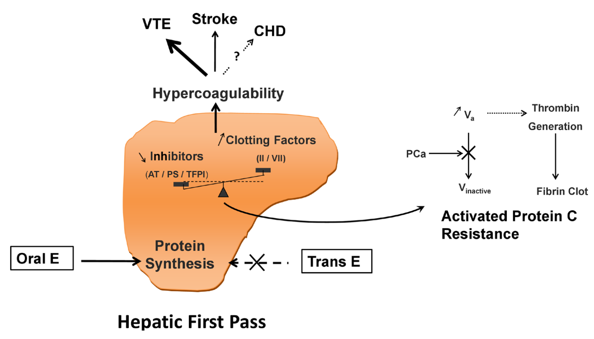
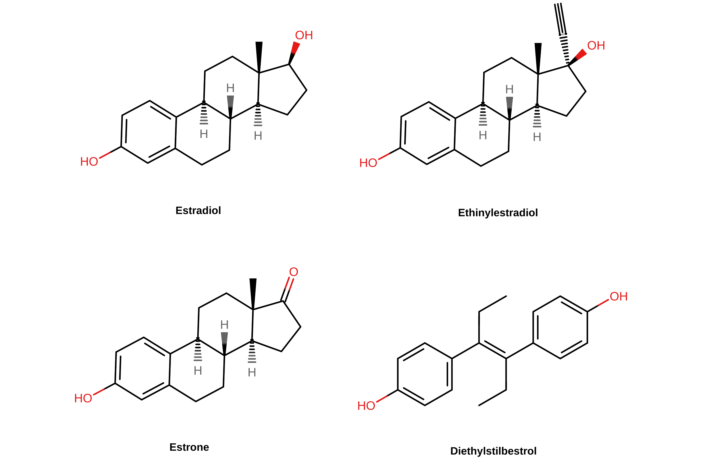
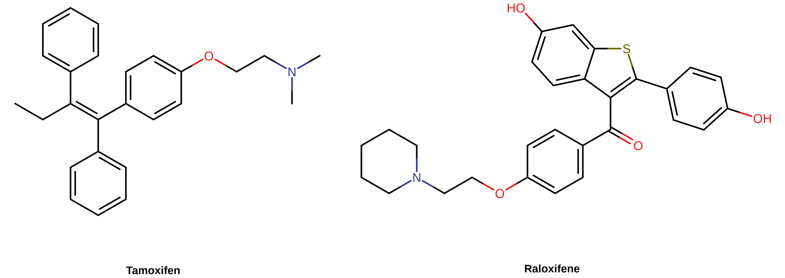
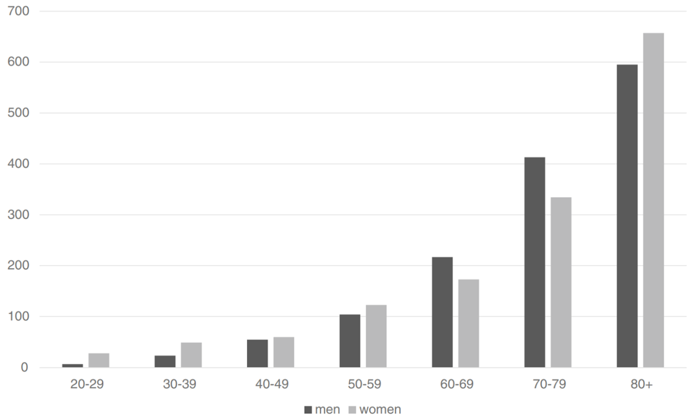

Estrogens and Their Influences on Coagulation and Risk of Blood Clots
By Aly | First published October 20, 2020 | Last modified March 28, 2023
Abstract / TL;DR
Estrogens increase coagulation by activating estrogen receptors in the liver and thereby modulating the production of a variety of circulating coagulation factors. With sufficiently high exposure, this can result in an increase in the risk of blood clots as well as coagulation-associated cardiovascular complications like heart attack and stroke. However, the degrees of risk vary depending on the estrogen type, route, and dose. Non-bioidentical estrogens like ethinylestradiol have greater strength in the liver due to their relative resistance to metabolism and increase blood clot risk more readily than bioidentical estradiol, while oral administration of estradiol results in a first pass through the liver and has greater impact on blood clot risk than non-oral estradiol. Physiological estradiol levels with non-oral estradiol appear to have minimal to no risk of blood clots, whereas oral estradiol has significant risk and at high doses may have risk similar to that of the doses of ethinylestradiol in modern birth control pills. Higher estradiol levels with non-oral estradiol seem to have significant risk of blood clots and cardiovascular problems as well, although the risks appear to be lower than with ethinylestradiol-containing birth control pills. Absolute risks of blood clots are low but accumulate with time and add up on a population scale. In addition, a variety of risk factors, such as age, physical inactivity, concomitant progestogen use, and often-unknown thrombophilic abnormalities, can substantially augment risk. Due to their higher risks of blood clots, oral estradiol as well as excessive doses of non-oral estradiol should ideally be avoided in transfeminine people. This is particularly applicable in those with risk factors for blood clots. In any case, therapeutic considerations for transfeminine people include not only safety but also effectiveness, other factors like cost and convenience, and the natures of the alternative therapeutic options.
Introduction
Estrogens increase coagulation (blood clotting) and the risk of thrombosis, a cardiovascular event otherwise known as a blood clot. There are two major types of blood clots, which are categorized depending on whether they happen in a vein or in an artery: (1) venous thrombosis or venous thromboembolism (VTE); and (2) arterial thrombosis. VTE is a blood clot in a vein, a blood vessel that carries blood towards the heart. It comprises two different subtypes: (1) deep vein thrombosis (DVT), a clot in a vein of the leg or pelvic region; and (2) pulmonary embolism (PE), a clot that has broken free and blocked an artery in the lungs. Arterial thrombosis is a blood clot in an artery, a blood vessel that carries blood away from the heart. Arterial thrombosis can lead to myocardial infarction (MI; also known as heart attack) or cerebrovascular accident (CVA; also known as stroke). Blood clots are major health problems that can cause serious complications and even death. Estrogens, via increased coagulation with sufficiently high exposure, have the potential to heighten the risk of both venous and arterial thrombosis and hence to increase all of the aforementioned risks. The risk of blood clots with estrogens serves as a limiting factor in their use due to the potential health consequences.
Estrogens are selective agonists of the estrogen receptors (ERs). They are thought to increase coagulation and hence blood clot risk by activating ERs. However, the impact on coagulation and risk of blood clots with estrogens varies due to factors like estrogen type, route, and dose. In addition, other factors, like concomitant progestogen use and a variety of non-hormonal factors, are known to modify the risk. The purpose of this article is to review the risks of blood clots with estrogens, the mechanisms underlying increased coagulation and blood clot risk with estrogens, and the reasons for differences among estrogens in terms of risk. Exploring these topics can inform estrogen dosing considerations in transfeminine people and help to minimize risks and optimize safety. Moreover, higher levels of estrogens are therapeutically useful for suppressing testosterone production in transfeminine people but may increase blood clot risk, and risk–benefit analysis is warranted in this context.
Blood Clot Risks with Estrogens and Progestogens
A variety of estrogens have been used in medicine. These include bioidentical estrogens like estradiol as well as non-bioidentical estrogens like conjugated estrogens (CEEs; Premarin), ethinylestradiol (EE), and diethylstilbestrol (DES). Estradiol is the major natural estrogen in the human body. CEEs deliver primarily estradiol as the active estrogen, but also contain significant quantities of naturally occurring equine (horse) estrogens such as equilin (7-dehydroestrone) and 17β-dihydroequilin (7-dehydroestradiol). EE and DES are synthetic estrogens that were created by humans and do not occur naturally. DES was discontinued decades ago and is relatively little-known today, but has significant historical importance. Estradiol is used in both oral and non-oral forms (e.g., transdermal patches), while the non-bioidentical estrogens have typically been used orally. For context, the table below shows some approximate comparable doses of these estrogens in terms of general estrogenicity.
Table 1: Approximate or estimated comparable doses of estrogens in terms of general/systemic estrogenicity (Aly, 2020; Kuhl, 2005; Table; Table; Table):
| Estrogen type/route | Very low dose a | Low dose a | Moderate dose b | High dose |
|---|---|---|---|---|
| Oral estradiol | 1 mg/day | 2 mg/day | 4 mg/day | 8 mg/day |
| Transdermal estradiolc | 25 μg/day | 50 μg/day | 100 μg/day | 200 μg/day |
| Oral conjugated estrogens | 0.625 mg/day | 1.25 mg/day | 2.5 mg/day | 5 mg/day |
| Oral ethinylestradiol | 7.5 μg/day | 15 μg/day | 30 μg/day | 60 μg/day |
| Oral diethylstilbestrol | 0.375 mg/day | 0.75 mg/day | 1.5 mg/day | 3 mg/day |
| Comparable estradiol level | ~25 pg/mL | ~50 pg/mL | ~100 pg/mL | ~200 pg/mL |
a Menopausal replacement dosages. b Similar to normal mean/integrated estrogenic exposure during the menstrual cycle in premenopausal women (Aly, 2018). c Specifically transdermal patches.
Estrogens were first associated with blood clots and associated cardiovascular complications in the 1960s and 1970s. Significant to substantial increases in these risks were found in clinical trials of high-dose DES (5 mg/day) for prostate cancer in men (VACURG, 1967; Byar, 1973; Turo et al., 2014), trials of moderate-dose CEEs (2.5–5 mg/day) for prevention of heart disease in men (Coronary Drug Project Research Group, 1970; Coronary Drug Project Research Group, 1973; Luria, 1989; Sudhir & Komesaroff, 1999; Dutra et al., 2019), and studies of early high-dose EE-containing birth control pills (50–150 μg/day) in premenopausal women (Gerstman et al., 1991; PCASRM, 2017; Table). The increase in cardiovascular events with DES in men with prostate cancer was sufficiently great that it actually cancelled out the benefits of its effects against prostate cancer in terms of overall mortality. The large increases in blood clots and cardiovascular problems seen in these studies resulted in alarm and concern about the safety of estrogens. Consequent to these events, estrogen doses were lowered. DES for prostate cancer was decreased to 1 to 3 mg/day and EE in birth control pills was decreased to 20 to 35 μg/day. Estrogens were also reduced to lower doses for other indications, such as menopausal hormone therapy. The dose reductions helped to lower the risks, although it did not eliminate them.
In the Women’s Health Initiative (WHI) randomized controlled trials (RCTs), low-dose oral CEEs alone (0.625 mg/day) were shown to slightly increase the risk of blood clots (Anderson et al., 2004; Curb et al., 2006; Prentice & Anderson, 2008; Prentice, 2014; Table). In addition, the increase was considerably augmented by concomitant use of a low dose (2.5 mg/day) of the progestogen medroxyprogesterone acetate (MPA) (Rossouw et al., 2002; Cushman et al., 2004; Prentice & Anderson, 2008; Prentice, 2014; Table). Increased risk of blood clots with low-dose oral CEEs plus low-dose MPA was also shown in another large RCT, the Heart and Estrogen/Progestin Replacement Study (HERS) (Hulley et al., 1998; Grady et al., 2000). Other progestogens besides MPA are also associated with augmentation of blood clot risk related to oral estrogens (Rovinski et al., 2018; Scarabin, 2018; Oliver-Williams et al., 2019; Vinogradova, Coupland, & Hippisley-Cox, 2019; Table). Large observational studies have found low-dose oral estradiol (generally ≤2 mg/day) to be dose-dependently associated with increased risk of blood clots similarly to CEEs (Olié, Canonico, & Scarabin, 2010; Renoux, Dell’Aniello, & Suissa, 2010; Vinogradova, Coupland, & Hippisley-Cox, 2019; Konkle & Sood, 2019; Table). However, the risk with oral estradiol or with oral esterified estrogens (a CEEs-like preparation with reduced equine estrogen content) appears to be lower than with oral CEEs (Smith et al., 2004; Smith et al., 2014; Vinogradova, Coupland, & Hippisley-Cox, 2019; Table). On the other hand, in another large observational study, oral estradiol and oral CEEs both in combination with progestogens appeared to show similarly increased risk of blood clots (Roach et al., 2013). As with oral CEEs, progestogens appear to augment the blood clot risk with oral estradiol (Vinogradova, Coupland, & Hippisley-Cox, 2019; Table).
In contrast to oral estrogens, transdermal estradiol at low to moderate doses (50–100 μg/day) has generally not been associated with increased coagulation nor with increased risk of blood clots or associated cardiovascular complications (Canonico et al., 2008; Hemelaar et al., 2008; Olié, Canonico, & Scarabin, 2010; Renoux, Dell’Aniello, & Suissa, 2010; Mohammed et al., 2015; Stuenkel et al., 2015; Bezwada, Shaikh, & Misra, 2017; Rovinski et al., 2018; Scarabin, 2018; Konkle & Sood, 2019; Oliver-Williams et al., 2019; Vinogradova, Coupland, & Hippisley-Cox, 2019; Abou-Ismail, Sridhar, & Nayak, 2020; Table). Similarly, the Menopause, Estrogen and Venous Events (MEVE) study found that oral estradiol was associated with a large increase in risk of blood clots in women with previous history of blood clots whereas transdermal estradiol (mean dose 50 μg/day) was associated with no risk increase (Olié et al., 2011). However, there are some exceptions on findings of transdermal estradiol and cardiovascular risks, for instance one observational study finding an increased risk of stroke with higher-dose (>50 μg/day) transdermal estradiol patches in menopausal women (Renoux et al., 2010; Oliver-Williams et al., 2019) and studies finding only small differences or no difference in coagulation between oral estradiol and transdermal estradiol in transfeminine people (Lim et al., 2020; Scheres et al., 2021). Studies are mixed on whether the combination of transdermal estradiol at menopausal doses with progestogens is associated with greater blood clot risk, with some finding no change and others finding increased risk (Rovinski et al., 2018; Scarabin, 2018; Vinogradova, Coupland, & Hippisley-Cox, 2019). It has been suggested that this may be related to the type of progestogen used (Scarabin, 2018).
There is little quality clinical data at this time on the risk of blood clots with higher doses of oral or transdermal estradiol than those used in menopausal hormone therapy. In any case, risk of blood clots has been assessed limitedly in transfeminine hormone therapy with regimens containing oral estradiol (e.g., 2–8 mg/day) generally in combination with other agents (antiandrogens and/or progestogens). In these studies, blood clot risk has been reported to be increased to a greater extent than with the low doses of oral estradiol used in menopausal hormone therapy (Wierckx et al., 2013; Weinand & Safer, 2015; Arnold et al., 2016; Getahun et al., 2018; Irwig, 2018; Connelly et al., 2019; Connors & Middeldorp, 2019; Goldstein et al., 2019; Iwamoto et al., 2019; Khan et al., 2019; Konkle & Sood, 2019; Quinton, 2019; Swee, Javaid, & Quinton, 2019; Abou-Ismail, Sridhar, & Nayak, 2020).
Whereas the WHI demonstrated causation for oral CEEs alone in terms of blood clot risk, no adequately powered RCTs have been conducted with oral or transdermal estradiol alone to establish causation in terms of blood clot risk at this time. Only very large and expensive trials would be able to show this due to the rarity of blood clots, and these studies have not been conducted to date. For similar reasons, RCTs demonstrating increased risk of blood clots with EE-containing birth control pills have also not been conducted at this time (Moores, Bilello, & Murin, 2004). In any case, causation has clearly been demonstrated with estrogens in other contexts, and this can be assumed as likely in the case of oral estradiol similarly. In addition, the Estrogen in Venous Thromboembolism Trial (EVTET), an RCT of low-dose (2 mg/day) oral estradiol plus the progestogen norethisterone acetate (NETA) versus placebo in postmenopausal women with history of previous blood clots, found that this hormone therapy regimen significantly increased coagulation and the incidence of blood clots (10.7% incidence with hormone therapy and 2.3% with placebo; P = 0.04) (Høibraaten et al., 2000; Høibraaten et al., 2001).
Estradiol levels appear to not be associated with blood clot risk in premenopausal women (Holmegard et al., 2014). The fact that transdermal estradiol patches at 100 μg/day in menopausal women haven’t been associated with a greater risk of blood clots is notable as this dose achieves estradiol levels of around 100 pg/mL on average, which are similar to the mean integrated levels of estradiol during the normal menstrual cycle in premenopausal women (Aly, 2018; Wiki). Rates of blood clots are also similar between men—who have relatively low estradiol levels—and women after controlling for atypical hormonal states like pregnancy and use of birth control pills in women (Moores, Bilello, & Murin, 2004; Rosendaal, 2005; Montagnana et al., 2010; Roach et al., 2013). Interestingly however, men have a consistently higher incidence of recurrent blood clots than women (Roach et al., 2013). These findings suggest that physiological levels of estradiol and progesterone in premenopausal women may not meaningfully increase coagulation or blood clot risk. However, the available data are mixed, with some studies suggesting that estradiol and/or progesterone levels within physiological ranges may indeed influence coagulation (Chaireti et al., 2013) and blood clot risk in premenopausal and/or perimenopausal women (Simon et al., 2006; Canonico et al., 2014; Scheres et al., 2019).
Modern combined birth control pills contain EE at moderately estrogenic doses (20–35 μg/day) and a physiological dose of a progestogen. They increase the risk of blood clots by several-fold (Konkle & Sood, 2019; Vinogradova, Coupland, & Hippisley-Cox, 2015; Table). In addition, they are associated with about a 1.5- to 2-fold increase in risk of heart attack and stroke (Lidegaard, 2014; Konkle & Sood, 2019). However, overall mortality is not increased with birth control pills—at least in the relatively young women in whom they are used (Hannaford et al., 2010). Per studies of menopausal hormone therapy, it is likely that the progestogen in EE-containing birth control pills augments the risk of blood clots with EE. Early high-dose birth control pills (50–100 μg/day) had as much as twice the risk of blood clots of modern birth control pills (Gerstman et al., 1991; PCASRM, 2017; Table). In contrast to the different blood clot risks between oral and transdermal estradiol, non-oral birth control forms containing EE, for instance transdermal birth control patches and vaginal birth control rings, are associated with similar increases in blood clot risk as EE-containing birth control pills (Plu-Bureau et al., 2013; PCASRM, 2017; Konkle & Sood, 2019; Abou-Ismail, Sridhar, & Nayak, 2020). Hence, unlike with estradiol, route of administration does not appear to modify blood clot risk with EE based on available data.
High-dose estrogen therapy using oral synthetic estrogens like DES and EE in people with breast or prostate cancer has been found to strongly increase the risk of blood clots and associated cardiovascular complications (Phillips et al., 2014; Turo et al., 2014; Coelingh Bennink et al., 2017). This has also been the case with estramustine phosphate (EMP; estradiol normustine phosphate), an estradiol ester that is used at massive doses in prostate cancer (e.g., 140–1,400 mg/day orally) and that results in pregnancy levels of estradiol (Kitamura, 2001 [Graph]; Ravery et al., 2011). In the 1980s however, it was found that high-dose non-oral estradiol did not have the same cardiovascular risks as high-dose estrogen therapy with oral synthetic estrogens or EMP (von Schoultz et al., 1989; Ockrim & Abel, 2009). This included studies with polyestradiol phosphate (PEP), a long-lasting injectable prodrug of estradiol, and with high-dose transdermal estradiol gel (von Schoultz et al., 1989; Aly, 2019). However, subsequent larger and higher-quality studies found that although the cardiovascular risks with PEP were much lower than with high-dose oral synthetic estrogen therapy, they were nonetheless still increased (Hedlung et al., 2008; Ockrim & Abel, 2009; Hedlund et al., 2011; Sam, 2020). This includes an approximate 2-fold increase in the risk of blood clots with estradiol levels in the range of roughly 300 to 500 pg/mL (Sam, 2020). Studies using high-dose transdermal estradiol patches have not found significantly increased cardiovascular complications as of present (Langley et al., 2013; Sam, 2020). However, these studies have been relatively underpowered, which limits their interpretation. In any case, increased coagulation has been observed with high-dose transdermal estradiol patches (achieving estradiol levels of 350 to 500 pg/mL) (Bland et al., 2005) similarly to PEP (Mikkola et al., 1999). More data on the risk of blood clots and cardiovascular issues with high-dose transdermal estradiol patches should come in the future with PATCH and STAMPEDE—two large-scale clinical studies in the United Kingdom that are evaluating this form of estradiol for prostate cancer (Gilbert et al., 2018; Singla, Ghandour, & Raj, 2019).
{kind=link}
Injections of short-acting estradiol esters like estradiol valerate and estradiol cypionate are notable in that they are often used by transfeminine people and are generally used at doses that achieve high estradiol levels. As with high-dose transdermal estradiol patches, little to no quality data on the risk of blood clots exists for these preparations at present. Pyra and colleagues found that the risk of blood clots with injectable estradiol valerate in transfeminine people was increased by around 2-fold, but the confidence intervals were very wide and statistical significance was not reached (Pyra et al., 2020). The doses used in the whole population for the study were not provided, but in the actual VTE cases, the doses of injectable estradiol valerate were described and ranged from 4 to 20 mg once per week and 10 to 40 mg once every 2 weeks (Pyra et al., 2020). Studies have also assessed and found increased coagulation with high doses of estradiol valerate by injection in the range of 10 to 40 mg once every 2 weeks in men with prostate cancer (Kohli & McClellan, 2001; Kohli et al., 2004; Kohli, 2005). Increased coagulation has additionally been observed with the combination of 5 mg estradiol valerate and a progestogen once per month as a combined injectable contraceptive in premenopausal women (Meng et al., 1990; UN/WHO et al., 2003). It is unclear whether the high peaks in estradiol levels associated with short-acting injectable forms of estradiol are harmful in terms of coagulation and blood clot risk (Hembree et al., 2017). However, the increased risk of polycythemia with short-acting injectable testosterone esters relative to other non-oral forms of testosterone (Ohlander, Varghese, & Pastuszak, 2018) is indirectly suggestive that this could be the case. Accordingly, a study found increased coagulation in premenopausal women with a combined injectable contraceptive containing estradiol valerate but not with one employing the more prolonged and stable estradiol cypionate at the same dose (UN/WHO et al., 2003).
Selective estrogen receptor modulators (SERMs) such as tamoxifen (Nolvadex) and raloxifene (Evista) increase the risk of blood clots similarly to estrogens (Park & Jordan, 2002; Fabian & Kimler, 2005). The risk appears to be elevated a few-fold similarly to what might be expected with moderate doses of oral estradiol or CEEs (Deitcher & Gomes, 2004; Iqbal et al., 2012; Konkle & Sood, 2019).
Pregnancy is a time when estradiol and progesterone levels increase to extremely high concentrations (Graphs). Estradiol levels increase progressively throughout pregnancy to around 2,000 pg/mL on average at the end of the first trimester, to about 10,000 pg/mL on average at the end of the second trimester, and to around 20,000 pg/mL on average at the end of the third trimester (Kerlan et al., 1994 [Graph]; Schock et al., 2016). Coagulation is greatly increased during pregnancy, and the risk of blood clots is likewise strongly increased (Heit et al., 2000; Abdul Sultan et al., 2015; Heit, Spencer, & White, 2016; Table). Estradiol and progesterone levels are strongly correlated with the increases in coagulation during pregnancy (Bagot et al., 2019). The risk of blood clots with modern birth control pills is similar to that with pregnancy as a whole (Heit, Spencer, & White, 2016), while the increases in risk of blood clots with early high-dose EE-containing birth control pills and with high-dose oral synthetic estrogen therapy for breast and prostate cancer are comparable to the risk increase during late pregnancy. Estradiol levels also increase to very high concentrations during ovarian stimulation for in-vitro fertilization in premenopausal women, and this has been associated with increased coagulation and risk of blood clots as well (Westerlund et al., 2012; Rova, Passmark, & Lindqvist, 2012; Kasum et al., 2014).
{kind=link}
Due to their greater risks of cardiovascular problems as well as other concerns, DES has been virtually abandoned while EE has been discontinued for almost all indications except birth control. EE continues to be used in birth control because it is resistant to metabolism in the uterus and controls menstrual bleeding better than oral estradiol does (Stanczyk, Archer, & Bhavnani, 2013). CEEs are also being increasingly superseded by estradiol in medicine, although significant use of CEEs for hormone therapy in cisgender women continues. Transdermal estradiol is gaining momentum over oral estradiol in menopausal hormone therapy as well. Major transgender hormone therapy guidelines (see also Aly, 2020) recommend against the use of EE and CEEs in transfeminine people due to their greater risks and the inability to accurately monitor blood estrogen levels with these preparations (Coleman et al., 2012; Deutsch, 2016; Hembree et al., 2017). Estradiol is the estrogen that is almost exclusively used in transfeminine people today. Besides estrogen type, it has been recommended that transdermal estradiol be used instead of oral estradiol in transfeminine people who are over 40 or 45 years of age or are otherwise at risk for blood clots (Deutsch, 2016; Iwamoto et al., 2019; Glintborg et al., 2021). Menopausal hormone therapy guidelines similarly recommend the use of transdermal estradiol over oral estrogens in cisgender women who are at higher risk for blood clots (e.g., Stuenkel et al., 2015).
As previously described, progestogens appear to augment the risk of blood clots with oral estrogens. Conversely, findings on the combination of non-oral estradiol and progestogens are mixed—with some studies finding increased risk and others finding no additional risk (Rovinski et al., 2018; Scarabin, 2018; Vinogradova, Coupland, & Hippisley-Cox, 2019). Progestogens by themselves do not usually increase coagulation (Kuhl, 1996; Schindler, 2003; Wiegratz & Kuhl, 2006; Sitruk-Ware & Nath, 2011; Sitruk-Ware & Nath, 2013; Skouby & Sidelmann, 2018) or blood clot risk (Blanco-Molina et al., 2012; Mantha et al., 2012; Tepper et al., 2016; Rott, 2019). However, depot MPA alone at birth control doses has uniquely been associated with a few-fold increase in blood clot risk (van Hylckama Vlieg, Helmerhorst, & Rosendaal, 2010; DeLoughery, 2011; Blanco-Molina et al., 2012; Gourdy et al., 2012; Mantha et al., 2012; Rott, 2019; Tepper et al., 2019). The reasons for this are unknown, but might relate to high peak MPA levels with depot injectables (Mantha et al., 2012) or the weak glucocorticoid activity of MPA (Kuhl & Stevenson, 2006; Sitruk-Ware & Nath, 2011). Besides physiological-dose MPA alone, high-dose progestogen therapy with MPA, megestrol acetate (MGA), and cyproterone acetate (CPA) has been associated with increased coagulation and blood clot risk (Schröder & Radlmaier, 2002; Schindler, 2003; Seaman et al., 2007; Garcia et al., 2013; Taylor & Pendleton, 2016). However, this was not the case with chlormadinone acetate (CMA) in a small study in women with prior history of blood clots (Conard et al., 2004). Risk of blood clots may also be increased for CPA in combination with estrogen in transfeminine people (Patel et al., 2022). In contrast to progestins, addition of oral progesterone to estrogen therapy is not associated with augmentation of blood clot risk (Scarabin, 2018; Oliver-Williams et al., 2019; Kaemmle et al., 2022). However, this may simply be due to the fact that oral progesterone produces low progesterone levels and has relatively weak progestogenic effects (Aly, 2018). Non-oral and fully potent progesterone has yet to be properly studied and hence its risk profile remains unknown (Aly, 2018).
In a historically notable study conducted by the Center of Expertise on Gender Dysphoria (CEGD) at the Vrije Universiteit Medical Center (VUMC) in Amsterdam, the Netherlands in the 1980s, it was reported that the risk of blood clots with high-dose EE and CPA in transfeminine people was increased by 45-fold relative to the expected incidence in the general population (Asscheman, Gooren, & Eklund, 1989; Asscheman et al., 2014). Mortality also appeared to be elevated and other health risks were increased as well (Asscheman, Gooren, & Eklund, 1989; Gooren & T’Sjoen, 2018). A subsequent study in transfeminine people by the CEGD confirmed strongly increased coagulation with EE but much lower increases with oral or transdermal estradiol (Toorians et al., 2003). Upon the CEGD switching transfeminine people from high-dose EE to physiological doses of oral or transdermal estradiol (also usually in combination with CPA), the risks decreased considerably (van Kesteren et al., 1997; Asscheman et al., 2011; Asscheman et al., 2014). These findings were of major importance in the replacement of EE with estradiol in transfeminine hormone therapy, and have surely contributed significantly to apprehension about the use of high doses of estrogens in transfeminine people.
Taken together, estrogens of all kinds have been shown to dose-dependently increase or be associated with increased risk of blood clots. These findings suggest that, provided of course sufficient exposure occurs, increased coagulation and blood clot risk are common properties of estrogens. However, synthetic and non-bioidentical estrogens have greater risk of blood clots than estradiol, and oral estradiol shows greater risk than non-oral estradiol. In fact, physiological estradiol levels in women and low to moderate doses of transdermal estradiol may have no significant risk of blood clots at all. Nonetheless, non-oral estradiol with sufficiently high exposure can increase blood clot risk just the same as other forms of estrogen. Concomitant therapy with progestogens appears to augment the risk of blood clots with estrogens and high doses may particularly amplify the risk.
Risks with Different Hormonal Exposures
The table below provides relative risk increases for blood clots with different types, routes, and doses of estrogens, as well as with SERMs, pregnancy, and high-dose CPA. It shows the greater risks of blood clots with (1) oral estradiol relative to non-oral estradiol; (2) estradiol compared to non-bioidentical estrogens; and (3) lower estrogen levels/doses relative to higher estrogen levels/doses.
Table 2: Relative risks of blood clots with different hormonal exposures (see also Machin & Ragni, 2020):
| Estrogen | Blood clot risk | Source |
|---|---|---|
| Oral E2 ≤1 mg/day | 1.2× | Vinogradova et al. (2019) [Table] |
| Oral E2 >1 mg/daya | 1.4× | Vinogradova et al. (2019) [Table] |
| Oral E2 ≤1 or >1 mg/daya + Pb | 1.4–1.8× | Vinogradova et al. (2019) [Table] |
| Transdermal E2 ≤50 μg/day | 0.9× | Vinogradova et al. (2019) [Table] |
| Transdermal E2 >50 μg/daya | 1.1× | Vinogradova et al. (2019) [Table] |
| Oral CEEs ≤0.625 mg/day | 1.4× | Vinogradova et al. (2019) [Table] |
| Oral CEEs >0.625 mg/daya | 1.7× | Vinogradova et al. (2019) [Table] |
| Oral CEEs ≤ or >0.625 mg/daya + Pb | 1.5–2.4× | Vinogradova et al. (2019) [Table] |
| Modern EE + P birth controlc | 4.2× | Heit, Spencer, & White (2016) |
| High-dose EE + P birth controlc | 4–10×d | Tchaikovski, Tans, & Rosing (2006); PCASRM (2017) [Table] |
| High-dose PEP injectionse | 2.1× | Sam (2020) |
| High-dose oral DES, EE, or EMP | 5.7–10× | Seaman et al. (2007); Ravery et al. (2011); Klil-Drori et al. (2015) |
| SERMs (tamoxifen, raloxifene) | ~1.5–3× | Deitcher & Gomes (2004); Iqbal et al. (2012); Konkle & Sood (2019) |
| Pregnancy (overall)f | 4.0× | Heit, Spencer, & White (2016) |
| Pregnancy (3rd trimester) | 5.1–7.1× | Abdul Sultan et al. (2015) [Table] |
| High-dose CPA alone | 3–5× | Seaman et al. (2007) |
Footnotes: a At typical menopausal replacement doses (i.e., not very high—probably no more than double the given dose). b MPA, norethisterone, norgestrel, or drospirenone. c Modern EE + P birth control contains 20–35 μg/day EE, while high-dose EE + P birth control used in the 1960s and 1970s contained 50–150 μg/day EE. d Risk around twice as high as modern birth control pills. e Unpublished original research/analysis with borderline statistical significance (95% CI 0.99–4.22). f Excluding the postpartum period. With the postpartum period included, the risk of blood clots with pregnancy is 5–10× (McLintock, 2014). Abbreviations: E2 = Estradiol; CEEs = Conjugated estrogens; EE = Ethinylestradiol; DES = Diethylstilbestrol; EMP = Estramustine phosphate; PEP = Polyestradiol phosphate; SERMs = Selective estrogen receptor modulators; CPA = Cyproterone acetate; P = Progestogen.
Note that the values in the table are associations mostly from observational studies rather than from RCTs. Hence, in many cases, causation has not been definitively established. In addition, the values represent rough average values with often wide 95% confidence intervals. As a result, precision and accuracy of the estimates may in some cases be low. Also note that quantified blood clot risk will vary depending on the study and its definitions and methodology (including factors like sampling error, approach to control of confounding variables, and residual confounding influences).
Mechanisms of Increased Coagulation with Estrogens
The ERs are expressed in the liver and estrogens exert effects in this part of the body through these receptors (Eisenfeld & Aten, 1979; Eisenfeld & Aten, 1987; Sahlin & von Schoultz, 1999; Grossmann et al., 2019). Estrogens are thought to increase the risk of blood clots by activating liver ERs and thereby modulating the hepatic production of numerous different coagulation factors, both procoagulant and anticoagulant (Kuhl, 2005; Tchaikovski & Rosing, 2010; DeLoughery, 2011; Konkle & Sood, 2019). Most coagulation factors and their inhibitors are synthesized in the liver (Mammen, 1992; Amitrano et al., 2002; Peck-Radosavljevic, 2007). Following their synthesis, these coagulation factors are secreted by the liver into the bloodstream where they circulate and mediate their actions. Circulating levels of procoagulant factors like fibrinogen (factor I), prothrombin (factor II), factors VII, VIII, and X, anticoagulant factors like antithrombin, protein C, protein S, and tissue factor pathway inhibitor (TFPI), and fibrinolytic factors like plasminogen, tissue plasminogen activator (t-PA), and plasminogen activator inhibitor-1 (PAI-1), are all influenced by estrogens (Hemelaar et al., 2008; Doxufils, Morimont, & Bouvy, 2020). These estrogen-mediated changes in levels result in an overall procoagulatory effect, as assessed by markers of net coagulation activation like prothrombin fragment 1+2 (F1+2), D-dimer, and thrombin–antithrombin complex (TAT), as well as global coagulation assays like the endogenous thrombin potential-based activated protein C resistance test (The Oral Contraceptive and Hemostasis Study Group, 1999; Kohli, 2006; Hemelaar et al., 2008; Douxfils et al., 2020; Douxfils, Morimont, & Bouvy, 2020). The changes in levels of most coagulation factors caused by estrogens are relatively small and levels often remain within normal ranges. However, they combine and synergize to produce larger increases in global coagulation and clot risk (Douxfils et al., 2020; Douxfils, Morimont, & Bouvy, 2020; Reda et al., 2020).
Aside from coagulation factors, estrogens also modulate the synthesis of numerous other liver products (Kuhl, 1999; Kuhl, 2005; Table). Examples include sex hormone-binding globulin (SHBG), corticosteroid-binding globulin (CBG), various other circulating binding proteins, angiotensinogen, lipoproteins, and triglycerides, among others. In accordance with the mechanisms underlying increased coagulation and blood clot risk with estrogens, the differences in risk of blood clots with different types and routes of estrogens are mirrored in their influences on estrogen-sensitive liver products. Put another way, different estrogens have different relative potency in the liver when compared to their estrogenic potency elsewhere in the body. Synthetic and non-bioidentical estrogens have greater impact on liver synthesis than estradiol, while oral administration of estradiol has greater influence on liver synthesis than non-oral routes like transdermal administration or intramuscular injection, and this is likely to explain the observed differences in coagulation and blood clot risk with these different estrogens. The table below shows the liver potency of different estrogenic exposures as measured by influence specifically on SHBG levels, one of the most sensitive and well-characterized estrogen-modulated liver products.
Table 3: Relative increases in SHBG levels with different estrogenic exposures (see also Aly, 2020):
| Estrogen | SHBG increase | Source |
|---|---|---|
| E2 patch 50 μg/day | 1.1× | Kuhl (2005) |
| E2 patch 100 μg/day | 1.2× | Shifren et al. (2008) |
| Oral E2 1 mg/day | 1.6× | Kuhl (1998) |
| Oral E2 2 mg/day | 2.2× | Kuhl (1998) |
| Oral E2 4 mg/day | 1.9–3.2× | Fåhraeus & Larsson-Cohn (1982); Gibney et al. (2005); Ropponen et al. (2005) |
| Oral EV 6 mg/day (~4.5 mg/day E2)a | 2.5–3.0× | Dittrich et al. (2005); Mueller et al. (2005); Mueller et al. (2006) |
| Oral CEEs 0.625 mg/day | 1.8× | Kuhl (1998) |
| Oral CEEs 1.25 mg/day | 2.2× | Kuhl (1998) |
| Oral EE 5 μg/day | 2.0× | Kuhl (1999) |
| Oral EE 10 μg/day | 3.0× | Kuhl (1998) |
| Oral EE 20 μg/day | 3.4× | Kuhl (1998) |
| Oral EE 50 μg/day | 4.0× | Kuhl (1997) |
| Modern EE + P birth controlb | ~3.0–4.0× | Odlind et al. (2002) |
| High-dose EE + P birth controlb | ~5–10× | Hammond (2017) |
| E2 patches 200 μg/day | ~1.5× | Smith et al. (2020) |
| E2 patches 300 μg/day | ~1.7× | Smith et al. (2020) |
| E2 patches 600 μg/day | ~2.3× | Bland et al. (2005) |
| High-dose E2 injectionsc | 1.7–3.2× | Stege et al. (1988); Kronawitter et al. (2009) [Table]; Mueller et al. (2011); Nelson et al. (2016) |
| High-dose oral DES, EE, or EMP | ~5–10× | von Schoultz et al. (1989) |
| Pregnancy | ~5–10× | Hammond (2017) |
Footnotes: a Due to differences in molecular weight, estradiol valerate has about 75% of the amount of estradiol as regular estradiol. Hence, 6 mg/day estradiol valerate is approximately equivalent to 4.5 mg/day estradiol. b Modern EE + P birth control contains 20–35 μg/day EE, while high-dose EE + P birth control used in the 1960s and 1970s contained 50–150 μg/day EE. c In the form of 320 mg/month PEP (~700 pg/mL estradiol), 100 mg/month estradiol undecylate (~500–600 pg/mL estradiol), or 10 mg/10 days estradiol valerate (~500–1,200 pg/mL peak estradiol; Graphs). Abbreviations: E2 = Estradiol; EV = Estradiol valerate; CEEs = Conjugated estrogens; EE = Ethinylestradiol; DES = Diethylstilbestrol; EMP = Estramustine phosphate; PEP = Polyestradiol phosphate; P = Progestogen.
The increase in SHBG levels with estrogen therapy correlates with increases in coagulation and blood clot risk and can serve as a reliable surrogate indicator of these effects (Odlind et al., 2002; van Rooijen et al., 2004; van Vliet et al., 2005; Tchaikovski & Rosing, 2010; Raps et al., 2012; Stegeman et al., 2013; Hugon-Rodin et al., 2017; Eilertsen et al., 2019). The increases in SHBG levels and blood clot risk even appear quite similar to each other with modern birth control pills (both ~4-fold), high-dose oral synthetic estrogen therapy (both ~5–10-fold), and late pregnancy (both ~5–10-fold). When data on blood clot risk with a given estrogen route or dose are limited or unavailable—for instance with high-dose oral estradiol or high-dose estradiol ester injections—changes in SHBG levels can be used as a rough proxy or surrogate instead to estimate overall liver impact, magnitude of change in coagulation systems, and blood clot risk. It should be noted however that progestogens may augment the blood clot risk with estrogens without necessarily affecting SHBG levels or even while decreasing SHBG levels via concomitant androgenic activity (Kuhl, 2005; Vinogradova, Coupland, & Hippisley-Cox, 2019).
Physiological levels of estradiol appear to have relatively minimal influence on liver synthesis (Eisenfeld & Aten, 1979; Lax, 1987; Kuhl, 2005). This is in accordance with the limited influence or non-influence of physiological estradiol levels in women on blood clot risk. It is thought that under normal physiological circumstances, estradiol is only supposed to considerably affect liver synthesis at very high levels—namely during pregnancy. The changes in synthesis of liver products during pregnancy presumably have important biological roles at this time (Eisenfeld & Aten, 1979). One of these is considered to be increased coagulation, as coagulation limits blood loss with childbirth and hence has survival benefits. Conversely, there is no obvious benefit to increased coagulation outside of pregnancy.
Estradiol and the Liver First Pass with Oral Administration
The oral route of administration is subject to a first pass through the liver via the hepatic portal vein which is not present with non-oral routes of administration (Pond & Tozer, 1984; Back & Rogers, 1987). As such, oral estradiol is subject to a hepatic first pass while this does not occur with non-oral forms of estradiol such as transdermal estradiol and injectable estradiol (Kuhl, 1998; Kuhl, 2005). This first pass results in disproportionate exposure of the liver to estradiol as well as disproportionate estrogenic impact on liver protein synthesis (Kuhl, 2005). Oral estradiol likewise has disproportionate estrogenic impact on the hepatic synthesis of coagulation factors (Kuhl, 1998; Kuhl, 2005). Due to the first pass, it is estimated that there is a 4- or 5-fold greater estrogenic impact of oral estradiol in the liver relative to non-oral estradiol (Kuhl, 2005). Due to the absence of the hepatic first pass with most non-oral routes, there is strong biological plausibility for the lower risk of blood clots that has been found with transdermal estradiol in comparison to oral estradiol in observational studies (Baber et al., 2016).
|  |
|---|
| Figure 1: Diagrammatic representation of increased coagulation via the liver first pass with oral estrogen therapy (Scarabin et al., 2020). Abbreviations: E = estrogen; trans = transdermal; AT = antithrombin; PS = protein S; TFPI = tissue factor protein inhibitor; II = prothrombin; VII = factor VII; PC = protein C; V = factor V; VTE = venous thromboembolism; CHD = coronary heart disease. Other terms: activated protein C resistance (APCR). |
Although oral estradiol has a much higher relative potential for blood clots due to the liver first pass, sufficiently high levels of estradiol will diffuse into the liver from the blood to act on this tissue regardless of route of administration. Hence, high levels of estradiol via non-oral routes (or produced by the body itself) can increase coagulation and blood clot risk similarly to the oral route. This is clearly evidenced by hyperestrogenic situations like pregnancy and ovarian stimulation for in-vitro fertilization, when estradiol levels increase to very high concentrations and substantially influence liver protein synthesis.
Non-Bioidentical Estrogens and Resistance to Liver Metabolism
Non-bioidentical estrogens such as EE, DES, and CEEs have greater impact on liver protein synthesis and risk of blood clots than either oral estradiol or non-oral estradiol (Kuhl, 1998; Kuhl, 2005; Phillips et al., 2014; Turo et al., 2014; Table). This is because the liver strongly metabolizes and inactivates estradiol, whereas non-bioidentical estrogens have differences in their chemical structures relative to estradiol that result in them being much more resistant to liver metabolism (Kuhl, 1998; Kuhl, 2005; Connors & Middeldorp, 2019; Swee, Javaid, & Quinton, 2019).
EE can be considered as a case example. The oral bioavailability of EE is around 45%, while that of estradiol is only about 5% (Kuhl, 2005; Stanczyk, Archer, & Bhavnani, 2013). In addition, the blood half-life of EE is in the range of 5 to 30 hours, compared to less than 1 hour in the case of estradiol (White et al., 1998; Kuhl, 2005; Stanczyk, Archer, & Bhavnani, 2013). As a result of these and other differences, EE is approximately 120 times as potent as estradiol by weight in terms of general estrogenic effect (Kuhl, 2005; Table). Hence, EE is used clinically in μg doses whereas oral estradiol is used at over 100-fold higher mg doses. The pharmacokinetic differences between EE and estradiol reflect the strong resistance of EE to liver metabolism (Kuhl, 2005). EE, or 17α-ethynylestradiol, shows resistance to liver metabolism because of an ethynyl group at the C17α position which has been added to what is the otherwise unchanged structure of estradiol (Kuhl, 2005). This modification results in steric hindrance which blocks 17β-hydroxysteroid dehydrogenases (17β-HSDs) as well as conjugating enzymes like sulfotransferases and glucuronosyltransferases from metabolizing EE at the C17β hydroxyl group. 17β-HSDs normally convert estradiol into the weakly active estrone while the conjugating enzymes convert estradiol into inactive C17β estrogen sulfate and glucuronide conjugates like estrone sulfate (Kuhl, 2005). An “ethinylestrone” metabolite is in fact a structural impossibility due to the requirement of a double bond for a C17 ketone group—the needed C17α position is already occupied in EE by its ethynyl group. As such, the metabolism of estradiol into weakly active or inactive metabolites like estrone and estrone sulfate in the liver is protective against activation of hepatic ERs and procoagulation, and the lack of this with EE is responsible for its greater blood clot risk (Kuhl, 2005; Russell et al., 2017).
|  |
|---|
| Figure 2: Chemical structures of selected estrogens. The C17 position in the case of the steroidal estrogens (E2, E1, and EE) is at the top right of the steroid nucleus. |
Due to the marked resistance of EE to hepatic metabolism and inactivation, it persists for a long time in the liver—often cycling through it many times before finally being broken down. Moreover, EE shows several-fold disproportionate impact on liver protein synthesis at otherwise equivalent doses relative to oral estradiol (Kuhl, 2005; Table). Consequently, whereas EE has around 120-fold the general potency of oral estradiol, the liver potency of EE is around 350 to 1,500 times greater than that of oral estradiol (von Schoultz et al., 1989; Kuhl, 2005). A dose of EE of as little as 1 μg/day has been shown to impact liver metabolism (Speroff et al., 1996; Trémollieres, 2012). In addition, the fact that EE shows similar hepatic impact and risk of blood clots regardless of whether it is administered orally, transdermally, or vaginally indicates that unlike oral estradiol, the first pass through the liver with oral administration is not necessary for blood clot risk with EE (Plu-Bureau et al., 2013; PCASRM, 2017; Konkle & Sood, 2019). EE is so resistant to metabolism that it does not seem to matter how it is administered—the liver impact is substantial regardless of route. The greatly increased liver potency of EE results in its influence on coagulation and blood clot risk being much higher than that of estradiol at equivalent doses.
CEEs show a few-fold disproportionate estrogenic impact on liver protein synthesis relative to oral estradiol but less than that of EE (Kuhl, 2005; Table). This can be attributed to the equine (horse) estrogens in CEEs, which humans are presumably not adapted to and which show resistance to liver metabolism in humans. DES, on the other hand, shows even greater estrogenic influence on the liver than EE (Kuhl, 2005; Table). The more disproportionate impact on liver synthesis of DES relative to EE or CEEs may be attributable to the fact that it is a nonsteroidal estrogen and is far removed in structure from steroidal estrogens. This is relevant as steroidal estrogens are susceptible to varying extents to robust steroid-metabolizing enzymes in the liver (Kuhl, 2005). As with EE, 17β-HSDs have no affinity for DES and the hydroxyl groups of DES are not oxidized to form estrone-like ketone metabolites (Jensen et al., 2010). Consequent to their resistance to liver metabolism relative to estradiol, CEEs and nonsteroidal estrogens like DES have greater impacts on coagulation and blood clot risk than equivalent doses of estradiol similarly to EE although to varying extents.
When compared to transdermal estradiol rather than oral estradiol, the disproportionate influence of oral non-bioidentical estrogens on estrogen-modulated liver protein synthesis becomes extreme. With a little math, it quickly becomes apparent why high doses of these estrogens have influences on liver proteins and blood clot risks that are comparable to those during pregnancy. The table below shows some roughly calculated estimates for comparative liver strength of the different estrogens.
Table 4: Roughly calculated ratios of liver estrogenic potency to general/systemic estrogenic potency with estrogens based on a selection of liver products (e.g., SHBG, others) (Kuhl, 2005; Table):
| Estrogen | Comparative liver potency | |
|---|---|---|
| Relative to oral E2 | Relative to transdermal E2 | |
| Transdermal E2 | ~0.25×a | 1.0×a |
| Oral E2 | 1.0× | ~4.0× |
| Oral CEEs | 1.3–4.5× | ~5.2–18× |
| Oral EE | 2.9–5.0× | ~12–20× |
| Oral DES | 5.7–7.5× | ~23–30× |
a Based on a study that found oral estradiol to have 4-fold greater effect on SHBG levels than transdermal estradiol when used at doses that produced similar estradiol levels (Nachtigall et al., 2000).
Changes in liver protein synthesis induced by estrogens don’t scale linearly with dose or relative liver potency. There is progressive saturation in terms of changes in levels of SHBG and other liver products with estrogen dose—that is, higher doses have relatively diminished effect compared to lower doses (Kuhl, 1990; Kuhl, 1999). As an example, oral EE shows the following dose-dependent increases in SHBG levels: 2.0-fold at 5 μg/day, 3.0-fold at 10 μg/day, 3.4-fold at 20 μg/day, and 4.0-fold at 50 μg/day (Kuhl, 1998; Kuhl, 1999). These findings can be attributed to saturation of the competitive binding and/or activation of liver ERs by high estrogen concentrations (Kuhl, 1990). An implication of this dose-dependent saturation is that although for instance oral EE has much stronger potency in the liver than oral estradiol, oral estradiol can more quickly “catch up” to oral EE and other non-bioidentical estrogens in terms of liver impact than might be initially anticipated. Accordingly, oral estradiol has shown the following dose-dependent increases in SHBG levels: 1.6-fold at 1 mg/day, 2.2-fold at 2 mg/day, and 1.9- to 3.2-fold at 4 mg/day (Fåhraeus & Larsson-Cohn, 1982; Kuhl, 1998; Gibney et al., 2005; Ropponen et al., 2005). Hence, although oral EE may have roughly 3- to 5-fold higher liver potency than oral estradiol, a dose of oral estradiol near-equivalent to that of oral EE in terms of general estrogenic effect can increase SHBG levels to an extent that is only somewhat lower in comparison.
Selective Estrogen Receptor Modulators and Metabolism Resistance
SERMs like tamoxifen and raloxifene are essentially partial agonists of the ER. This is in contrast to estrogens—like estradiol, CEEs, EE, and DES—which act as full agonists of the ER. Similarly to nonsteroidal estrogens like DES, the clinically used SERMs are all nonsteroidal in structure and are strongly resistant to hepatic metabolism. In fact, certain SERMs, like tamoxifen and clomifene, are structurally related to and were derived from DES. SERMs show tissue differences in their ER-mediated effects, with estrogenic effects in some tissues (e.g., bone) and antiestrogenic effects in other tissues (e.g., breasts) (Lain, 2019; Table). Although there is variation between SERMs in terms of their effects in certain tissues (e.g., uterus), they are uniformly estrogenic in the liver. Consequently, SERMs show similar increases in blood clot risk as estrogens (Park & Jordan, 2002; Fabian & Kimler, 2005). As with non-bioidentical estrogens, the greater risk of blood clots with SERMs compared to oral estradiol can be attributed to their resistance to liver metabolism and hence to greater hepatic estrogenic potency. The SERMs that are used medically belong to diverse structural families (e.g., triphenylethylenes like tamoxifen and benzothiophenes like raloxifene). The only way in which SERMs of different structural classes are known to be related is in their shared interactions with the ERs.
|  |
|---|
| Figure 3: Chemical structures of selected SERMs. They are nonsteroidal in structure and include tamoxifen (a triphenylethylene) and raloxifene (a benzothiophene). |
Activation of the Estrogen Receptor is Specifically Responsible for Increased Coagulation with Estrogens and SERMs
Findings from preclinical and genetic research provide direct evidence for ER activation being responsible for the increased blood clot risk with estrogens. In an important animal study, EE was administered to mice and changes in procoagulant and anticoagulant biomarkers were measured (Cleuren et al., 2010). EE caused changes in levels of a variety of coagulation factors (Cleuren et al., 2010). The researchers also assessed estradiol and observed comparable changes (Cleuren et al., 2010). Co-administration of the selective ER full antagonist fulvestrant with EE neutralized all of the EE-induced coagulatory changes (Cleuren et al., 2010). Additionally, EE showed no effect on coagulation factors in ERα knockout mice (Cleuren et al., 2010). These findings are consistent with human and mouse genome-wide association studies which have found estrogen response elements (EREs)—DNA sequences that act as binding sites for genes regulated by the ER—embedded in a large number of genes involved in coagulatory pathways (Cleuren et al., 2010; Stanczyk, Mathews, & Cortessis, 2017).
The preceding findings are consistent with ER activation being responsible for increased coagulation and blood clot risk with estrogens and SERMs. This is in accordance with the fact that blood clot risk is a shared effect of selective ER agonists with highly diverse chemical structures, providing strong circumstantial support against a non-ER-mediated action of some sort being responsible (e.g., the weakly estrogenic metabolite estrone somehow mediating the blood clot risk with estradiol—Bagot et al., 2010). Increased coagulation and blood clot risk can thus be regarded as class effects of estrogens and SERMs—provided sufficiently high liver exposure. Due to differences in susceptibility to liver metabolism however, different ER agonists show differences in their relative impact on coagulation. Owing to estradiol’s lack of resistance to metabolism and its robust inactivation in the liver, the dosage requirements for increased coagulation and blood clot risk with estradiol—particularly in the case of non-oral estradiol—are greater than with non-bioidentical estrogens. Hence, estradiol, especially when administered via non-oral routes, is a safer form of estrogen therapy than other estrogens.
Absolute Incidences and Risk Factors
States of estrogen and/or progestogen exposure, such as exogenous hormone administration and pregnancy, are of course established risk factors for blood clots in women. In healthy young individuals without relevant risk factors for blood clots however, the incidence of blood clots is rare even in situations of considerably increased risk due to hormones (Rosendaal, 2005). The absolute incidence of VTE in non-pregnant women is only 1 to 5 of every 10,000 women each year (i.e., 0.01–0.05% per year) (PCASRM, 2017; Konkle & Sood, 2019). EE-containing birth control pills, which on average increase VTE risk by about 4-fold, are associated with an incidence of VTE of only 3 to 9 of every 10,000 women each year (i.e., 0.03–0.09% per year) (Konkle & Sood, 2019). Likewise, the absolute risk of blood clots during pregnancy, when estradiol and progesterone levels increase to extremely high concentrations and VTE risk is increased up to 7-fold (Abdul Sultan et al., 2015), is about 5 to 20 of every 10,000 women each year (i.e., 0.05–0.2% per year) (PCASRM, 2017; Konkle & Sood, 2019).
Table 5: Absolute incidences of VTE with different estrogenic exposures in premenopausal women (Gerstman et al., 1991; Konkle & Sood, 2019; Douxfils, Morimont, & Bouvy, 2020):
| Group/therapy | Incidence (women per year) |
|---|---|
| Non-pregnant women | 1 to 5 in 10,000 (0.01–0.05%)a |
| Modern birth control pills (<50 μg/day EE) | 3 to 12 in 10,000 (0.03–0.09%) |
| High-dose birth control pills (>50 μg/day EE) | ~10 in 10,000 (0.1%) |
| Pregnancy | 5 to 20 in 10,000 (0.05–0.2%) |
| Postpartum period | 40 to 65 in 10,000 (0.4–0.65%) |
a 1–2/10,000 per year at <19 years of age, 2–3/10,000 per year at 20–29 years of age, 3–4/10,000 per year at 30–39 years of age, 5–7/10,000 per year at 40–49 years of age; roughly 3–4/10,000 per year for age 15–49 years overall (Rabe et al., 2011).
In any case, the risks of VTE and cardiovascular events with high estrogen exposure accumulate over time and add up on a population scale. It is estimated that 22,000 instances of VTE occur due to birth control pills in Europe each year (Morimont, Dogné, & Douxfils, 2020) and that 300 to 400 healthy young women die due to blood clots caused by birth control pills in the United States every year (Keenan, Kerr, & Duane, 2019). Notably, non-EE-containing birth control pills—which instead of EE contain estradiol or estetrol—appear to have considerably reduced procoagulatory effects and/or risk of blood clots in comparison, and if they become more established, will likely eliminate a substantial number of these cases (Stanczyk, Archer, & Bhavnani, 2013; Dinger, Minh, & Heinemann, 2016; Grandi, Facchinetti, & Bitzer, 2017; Fruzzetti & Cagnacci, 2018; Grandi et al., 2019; Grandi et al., 2020; Douxfils, Morimont, & Bouvy, 2020; Reda et al., 2020; Morimont et al., 2021; Grandi, Facchinetti, Bitzer, 2022).
In addition to time and population considerations, there are, besides estrogen and progestogen exposure, a variety of other known risk factors for blood clots, and these risk factors can substantially augment blood clot risk (Heit et al., 2000; Rosendaal, 2005). Age is among the strongest of the known risk factors (Rosendaal, 2005; Montagnana et al., 2010). Moreover, age is uniquely notable as a risk factor in that it is one that eventually becomes relevant to everyone. The risk of blood clots increases on the order of 100-fold going from ≤15 years of age (incidence <0.005–0.01% per year) to ≥80 years of age (incidence ~0.5–1.0% per year) (Rosendaal, 2005; Montagnana et al., 2010; Rabe et al., 2011). The figure below provides a graphical representation of the influence of age on risk of blood clots.
|  |
|---|
| Figure 4: Risk of first-incidence VTE (per 100,000 per year) by age group (in years) in men (black bars) and women (gray bars) (Oger, 2000; Rosendaal, 2005; Rosendaal, 2016). |
Other established risk factors for blood clots and associated cardiovascular problems include physical inactivity (due to, e.g., bed rest, long-distance travel, etc.), obesity, smoking, thrombophilic abnormalities, cancer, surgery, and HIV, among many others (Baron et al., 1998; Heit et al., 2000; Rosendaal, 2005; Lijfering, Rosendaal, & Cannegieter, 2010; Timp et al., 2013). In addition to age, physical inactivity is one of the most important risk factors for blood clots and mediates the risk increases for many of the others (Rosendaal, 2005). Smoking on its own is not consistently associated with increased risk of VTE (Lijfering, Rosendaal, & Cannegieter, 2010), but in combination with EE-containing birth control pills has been associated with a synergistic increase in VTE risk (Pomp, Rosendaal, & Doggen, 2008) as well as large increases in risk of heart attack—for instance 20-fold higher risk in heavy smokers (Kuhl, 1999). The table below shows the influence of a selection of known risk factors for VTE:
Table 6: Non-exogenous-hormone risk factors for VTE and relative VTE risk increases (Baron et al., 1998; Heit et al., 2000; Rosendaal, 2005; Lijfering, Rosendaal, & Cannegieter, 2010; Timp et al., 2013):
| Risk factor | Relative risk |
|---|---|
| Age | 1–∞× |
| Cancer | 2–20×a |
| HIV | 3–10× |
| Overweightness/obesity | 2–3× |
| Surgery, trauma, immobilization | 5–50× |
| Bed rest at home | 9× |
| Air travel | 1.5–3× |
| Smoking | 0.8–1.5×b |
| Varicose veins | 1–4× |
| Pregnancy | 4× |
| Postpartum | 15–20× |
a Varies by type and stage of cancer (Baron et al., 1998; Timp et al., 2013). For breast and prostate cancer, one study found a 1.8-fold greater risk for breast cancer and 4.2-fold greater risk for prostate cancer relative to the general population (Baron et al., 1998). b Smoking on its own is not consistently associated with VTE (Lijfering, Rosendaal, & Cannegieter, 2010; Rabe et al., 2011).
Thrombophilias, heritable and acquired, exist in significant percentages of the population and can lead to large increases in blood clot risk (Lijfering, Rosendaal, & Cannegieter, 2010). Moreover, they are often if not usually unknown (Morimont, Dogné, & Douxfils, 2020). This is due to the fact that screening for heritable thrombophilias is mainly based on family history, which has low sensitivity and poor predictive value for identifying people with these abnormalities (Morimont, Dogné, & Douxfils, 2020). Hence, many people are at increased risk of blood clots without realizing it. The table below shows the prevalences of a variety of thrombophilic abnormalities and their impacts on blood clot risk.
Table 7: Prevalences of thrombophilic abnormalities and relative risk of VTE (Martinelli, Passamonti, & Bucciarelli, 2014; Mannucci & Franchini, 2015; see also Walker, 2009; Konkle & Sood, 2019).
| Thrombophilia | Prevalence | Relative risk | ||
|---|---|---|---|---|
| General population | People with VTE | First VTE | Recurrent VTE | |
| Antithrombin deficiency | 0.02–0.2% | 1% | 50× | 2.5× |
| Protein C deficiency | 0.2–0.4% | 3% | 15× | 2.5× |
| Protein S deficiency | 0.03–0.1% | 2% | 10× | 2.5× |
| Factor V Leiden (het.) | 5% | 20% | 7× | 1.5× |
| Factor V Leiden (homo.) | 0.02% | 1.5% | 80× | – |
| Prothrombin G20210A (het.) | 2% | 6% | 3–4× | 1.5× |
| Prothrombin G20210A (homo.) | 0.02% | <1% | 30× | – |
| Non-O blood group | 55–57% | 75% | 2× | 2× |
| Antiphospholipid antibodies | 1–2% | 5–15% | 11× | ? |
| Hyperhomocysteinemia | 5% | 10–15% | 1.5× | ? |
Blood clots are considered to be a multicausal disease (Rosendaal, 2005). The risk of blood clots and associated cardiovascular complications with hormonal exposure is highest when multiple risk factors combine in a given individual. Under what are among the most extreme of circumstances in terms of risk—elderly people with cancer who are on high-dose oral synthetic estrogen therapy (e.g., DES)—blood clot incidence can be as high as 15 to 28% and overall incidence of cardiovascular complications as great as 35% (Phillips et al., 2014; Sciarria et al., 2014; Turo et al., 2014). These adverse effects contribute to substantial morbidity and incidence of death in these populations. Most people are however at nowhere near as great of risk. Risk factors like age are why pregnant women can have massive levels of estradiol and progesterone with relatively little issue whereas elderly cancer patients on high-dose oral synthetic estrogen therapy have a considerable risk of death.
In the VUMC studies that found 20- to 45-fold increased incidence of blood clots with high-dose EE and CPA over 5 to 10 years in transfeminine people, the absolute incidence of blood clots was approximately 6.3% (142/10,000 people per year) in the 1989 report and 5.5% (58/10,000 people per year) in the 1997 follow up (Asscheman, Gooren, & Eklund, 1989; van Kesteren et al., 1997; Asscheman et al., 2014; Goldstein et al., 2019; Min & Hopkins, 2021). In keeping with the known influence of age on blood clot risk, the absolute incidence was 2.1% in those under 40 years of age and 12% in those over 40 years of age in the 1989 study (Asscheman, Gooren, & Eklund, 1989; Asscheman et al., 2014). In about 70% of cases, there were—aside from age—no known risk factors for blood clots (Asscheman, Gooren, & Eklund, 1989; Asscheman et al., 2014). Following subsequent replacement of EE with low-to-moderate-dose transdermal estradiol in those over 40 years of age, the incidence of blood clots decreased substantially (with only one event occurring in the transdermal estradiol group) (van Kesteren et al., 1997; Asscheman et al., 2014; Min & Hopkins, 2021). A later study in 2013 by the Ghent University Hospital in Belgium observed a blood clot incidence of 5.1% in transfeminine people using mostly oral or transdermal estradiol with or without CPA over an average treatment period of 7.7 years (range 3 months to 35 years) (Wierckx et al., 2013; Min & Hopkins, 2021). Those who had blood clots often had other risk factors such as older age, smoking, immoblization due to surgery, or hypercoagulability (Wierckx et al., 2013; Min & Hopkins, 2021). In addition to cumulative exposure time, these studies further highlight the converging impact of multiple risk factors—with estrogen type, route, and dose, progestogen exposure, and age included among them—on the risk of blood clots.
Therapeutic Implications for Transfeminine People
Due to their greater risk of blood clots and cardiovascular problems, non-bioidentical estrogens like EE and CEEs are mostly no longer used in transfeminine people. Instead, estradiol, both in oral and non-oral forms, is used. Transgender clinical guidelines generally recommend keeping estradiol levels within normal physiological ranges for non-pregnant females of around 100 to 200 pg/mL regardless of whether the route of administration of estradiol is oral or non-oral (Aly, 2018). Higher estradiol levels are not currently known to have greater therapeutic benefit in terms of feminization or breast development (Nolan & Cheung, 2020). However, higher levels, in the range of 200 to 500 pg/mL, can provide additional therapeutic effect in the area of testosterone suppression—which can be indirectly beneficial to feminization if otherwise inadequate (Aly, 2018). Despite their recommendations for keeping estradiol levels in physiological ranges, transgender clinical guidelines notably recommend doses of estradiol ester injections that reach and even greatly exceed estradiol levels of 200 pg/mL (Aly, 2021).
Based on the available research (e.g., the risk of blood clots with lower doses, comparative SHBG increases), it would not be surprising if high-dose oral estradiol (e.g., 8 mg/day) had similar risk of blood clots as the relatively lower amounts of EE in birth control pills. The risk is likely to be particularly great in combination with progestogens (e.g., CPA). Due to its greater and unnecessary risk of blood clots relative to non-oral estradiol, oral estradiol should ideally be avoided in transfeminine people—particularly in those with risk factors for blood clots such as older age (e.g., >40 years) or concomitant progestogen use. However, the convenience of oral estradiol and its relative inexpensiveness (compared to e.g. transdermal forms) are significant advantages that will also be considered by transfeminine people and their clinicians. In contrast to oral estradiol, non-oral estradiol—with estradiol levels kept in physiological ranges of for instance 100 to 200 pg/mL—appears to have minimal to no risk of blood clots. Hence, non-oral estradiol at these levels can be used in transfeminine people with little concern.
In terms of higher estradiol levels delivered non-orally, the estimated 2-fold increase in risk of blood clots with estradiol levels of approximately 300 to 500 pg/mL (Sam, 2020) is notably lower than the average 4-fold increase in risk with widely used EE-containing birth control pills. Based on the usefulness of these levels for suppressing testosterone production and the widespread usage of EE-based birth control in cisgender women throughout the world, the degree of blood clot risk with high-dose non-oral estradiol, in reasonable amounts, could be considered therapeutically acceptable in transfeminine people (Haupt et al., 2020). This may be particularly true when high-dose non-oral estradiol monotherapy is compared to combination of estradiol with antiandrogens like spironolactone, CPA, or bicalutamide, which all have their own unique risks and drawbacks. In any case, as with oral estradiol, high estradiol levels with non-oral estradiol should ideally be avoided due to the additional risk they pose, and this is especially true in those with relevant risk factors for blood clots (e.g., older age). In addition, very high doses of non-oral estradiol resulting in estradiol levels above those required for testosterone suppression are difficult to justify as they pose further unnecessary risk and offer no clear additional therapeutic benefit.
Prevention of Blood Clots
The best way to prevent blood clots from happening is to avoid risk altogether. Avoiding use of oral estradiol, excessively high doses of non-oral estradiol, and progestogens when feasible and opting for safer therapeutic choices is recommended in this regard. In addition, avoiding use of such therapies in those with risk factors like older age (>40 years), known thrombophilic abnormalities, and sedentary lifestyle is advocated. Proactive behaviors like physical activity (e.g., walking, exercise), quitting smoking, and weight loss may help to reduce the risk of blood clots (Hibbs, 2008).
Certain anticoagulant and antiplatelet medications are used to help prevent blood clots in high-risk individuals. Examples include low-dose aspirin (Mekaj, Daci, & Mekaj, 2015; Matharu et al., 2020), direct factor Xa inhibitors like rivaroxaban (Xarelto) (Blondon, 2020), and direct thrombin inhibitors like dabigatran (Pradaxa), among others. Aspirin has been found to be effective in the prevention of blood clots (Mekaj, Daci, & Mekaj, 2015; Matharu et al., 2020) and has been recommended for use specifically in transfeminine people on hormone therapy (Feldman & Goldberg, 2006; Deutsch, 2016). However, evidence is limited and conflicting for prevention of blood clots related to hormone therapy (Grady et al., 2000; Cushman et al., 2004) and use of aspirin in transfeminine people for such purposes has been recommended against by others (Shatzel, Connelly, & DeLoughery, 2017). Rivaroxaban has been associated with more than completely offset risk of blood clots with oral menopausal hormonal therapy (Blondon, 2020). In any case, no anticoagulants are currently approved or well-supported for preventing risk of blood clots with hormone therapy. Accordingly, clinical guidelines state that there is insufficient evidence to guide decision-making in this area at this time (e.g., McLintock, 2014). It should also be cautioned that anticoagulants have side effects and risks of their own and should be used carefully.
Rutin, a naturally occurring flavonoid found in various plants and foods and available as a herbal supplement, has been suggested by some in the transfeminine community as a preventative against blood clots based on limited preclinical research (Jasuja et al., 2012; Choi et al., 2015). However, there is no clinical evidence to support its use or effectiveness at this time (e.g., Martinez-Zapata et al., 2016; Morling et al., 2018). Dose-finding studies to determine appropriate doses for efficacy also have not been performed. Flavonoids like rutin are notably known to have unfavorable dispositions in the body (e.g., very low bioavailability, high metabolism, short half-lives) and this has limited their usefulness by rendering them poorly active and therapeutically ineffective (Ma et al., 2014; Higdon et al., 2016; Cassidy & Minihane, 2017; Zhao, Yang, & Xie, 2019; Zhang et al., 2021). Lastly, the tolerability and safety of rutin have not been evaluated. For these reasons, use of rutin to lower the risk of blood clots in transfeminine people cannot be recommended at this time.
Temporary discontinuation of estrogen therapy before surgery has traditionally been thought to help reduce the risk of blood clots during recovery based on theory and has been advised as well as mandated for transfeminine people undergoing surgical procedures (e.g., Asscheman et al., 2014). However, evidence is limited and inconclusive on this strategy at present and more research is needed to determine whether it is actually beneficial or not (Boskey, Taghinia, & Ganor, 2019; Nolan & Cheung, 2020; Haveles et al., 2021; Hontscharuk et al., 2021; Kozato et al., 2021; Nolan et al., 2021; Zucker, Reisman, & Safer, 2021). Recent studies have not found reduction in risk of blood clots with discontinuation of hormone therapy before surgery in transfeminine people but these studies have been underpowered and larger studies are needed (Blasdel et al., 2021). Temporarily stopping hormone therapy can be distressing for many transfeminine people and this should be weighed accordingly. A potential alternative to discontinuation of hormone therapy is temporary use of transdermal estradiol at physiological doses which has no known blood clot risk and is more likely to be safe.
Updates
Update 1: Langley et al. (2021) [PATCH Study Results]
In February 2021, a report on long-term cardiovascular outcomes for the Prostate Adenocarcinoma: TransCutaneous Hormones (PATCH) trial was published (Langley et al., 2021) [PDF; Supplementary appendix]. The PATCH trial is a large ongoing phase 2/3 randomized controlled trial of high-dose transdermal estradiol patches versus GnRH agonists for the treatment of prostate cancer in men (Langley et al., 2021). The estradiol patch dosage employed is specifically three to four 100 μg/day FemSeven or Progynova TS patches (Langley et al., 2021). In the February 2021 report of the study, 1,694 men were enrolled and randomized, with 790 included in the analysis for the GnRH agonist group and 904 included in the analysis for the estradiol patch group (Langley et al., 2021).
In those given estradiol, the median estradiol level was around 215 pg/mL (5%–95% range ~100–550 pg/mL) (Langley et al., 2021). About 93% of the men in this group achieved suppression of testosterone levels into the castrate range (<50 ng/dL), which was notably equal to the rate of suppression in the GnRH agonist group (~93%) (Langley et al., 2021). However, actual testosterone levels—as opposed to rates of testosterone suppression—were not provided in this report and hence comparison between groups is unavailable for this metric (Langley et al., 2021). After about 4 years median follow up, there were no significant differences on a variety of cardiovascular outcomes between the estradiol group and the GnRH agonist group (Langley et al., 2021). Among these outcomes included VTE, thromboembolic stroke, and other arterial embolic events (Langley et al., 2021). These results are in contrast to previous large clinical trials of PEP in prostate cancer, which found increased cardiovascular morbidity and risk of VTE but notably involved higher estradiol levels than employed in the PATCH trial (Ockrim & Abel, 2009; Sam, 2020). Based on their promising safety findings, the PATCH researchers stated that transdermal estrogen should be reconsidered for the treatment of prostate cancer (Langley et al., 2021).
These findings are reassuring and suggest that limitedly high levels of estradiol (e.g., 200–300 pg/mL perhaps) may likewise be acceptably safe in terms of blood clot and cardiovascular risk in transfeminine people. It should be noted however that the sample size of the trial, while large relative to previous clinical studies in this area, was underpowered for assessing risk of blood clots—which are relatively rare events that require very large samples to thoroughly quantify. Studies precisely assessing blood clot risk in peri- and postmenopausal women have included tens of thousands of individuals for instance. As such, while substantial increases in risk are not likely based on this trial, smaller increases in risk still cannot be ruled out at this time. It should additionally be noted that the robust testosterone suppression at the used doses in this study might not generalize to transfeminine people as a whole, as the men were mostly elderly and testosterone levels are known to decrease with age.
Update 2: Totaro et al. (2021) and Kotamarti et al. (2021)
In November 2021, the following systematic review and meta-analysis as well as meta-regression study of VTE risk with transfeminine hormone therapy was published:
- Totaro, M., Palazzi, S., Castellini, C., Parisi, A., D’Amato, F., Tienforti, D., Baroni, M. G., Francavilla, S., & Barbonetti, A. (2021). Risk of Venous Thromboembolism in Transgender People Undergoing Hormone Feminizing Therapy: A Prevalence Meta-Analysis and Meta-Regression Study. Frontiers in Endocrinology, 12, 741866. [DOI:10.3389/fendo.2021.741866]
This study is the largest of its kind that has been conducted to date. The meta-analysis included 18 studies totaling 11,542 transfeminine people on hormone therapy. The pooled prevalence of VTE was 2% with a 95% confidence interval of 1 to 3%. However, there was large variability between studies. In the meta-regression analysis, older age and longer length of estrogen therapy were significantly positively associated with VTE prevalence. When analysis was restricted to those greater than or equal to 37.5 years of age, the prevalence of VTE was 3% (95% CI: 0–5%). Conversely, in those less than 37.5 years of age, the prevalence of VTE was 0% (95% CI: 0–2%). VTE prevalence was 1% (95% CI: 0–3%) with greater than or equal to 4.4 years of estrogen therapy and was 0% (95% CI: 0–3%) with less than 4.4 years of estrogen therapy. With regard to the 0% estimates, it is not the case that there is truly no risk of VTE in these instances but rather it can be assumed that the risks are sufficiently low that the meta-analysis was not powered well enough to detect and quantify them.
A limitation of the meta-analysis was that subgroup analyses based on estrogen type (i.e., estradiol vs. CEEs vs. EE) and route (e.g., oral estrogens or oral estradiol vs. transdermal estradiol) were said to not be possible due to insufficient data and hence were not performed. However, another recent meta-analysis published in July 2021, which analyzed much of the same literature as Totaro et al. (2021), did perform subgroup analyses by estrogen type and route. This publication is as follows:
- Kotamarti, V. S., Greige, N., Heiman, A. J., Patel, A., & Ricci, J. A. (2021). Risk for Venous Thromboembolism in Transgender Patients Undergoing Cross-Sex Hormone Treatment: A Systematic Review. The Journal of Sexual Medicine, 18(7), 1280–1291. [DOI:10.1016/j.jsxm.2021.04.006]
And this is what they reported in terms of subgroup analyses for estrogen type and route:
Because varying VTE rates have been reported with different estrogen regimens, analyses of VTE incidence were performed comparing oral or transdermal delivery, or the specific estrogen formulation. As many studies reported populations using mixed estrogen formulations or did not report the type of estrogen regimen, further statistical analysis could not be performed.
Route of estrogen administration appeared to play a role in the AMAB population. [Oral] estrogens (7 studies; 34.0 VTE per 10,000 person-years) vs transdermal estrogens (3 studies, 11.2 VTE per 10,000 person-years). Additionally, estrogen formulation also appeared to have a difference VTE incidence. Ethinyl estradiol was also associated with increased VTE incidence (3 studies, 293.1 VTE per 10,000 person-years) followed by conjugated equine estrogens (1 study, 49.0 VTE per 10,000 person-years) and estradiol valerate (4 studies, 31.5 VTE per 10,000 person-years).
It is unclear how accurate these precise numbers are due to the quality limitations of the underlying data. Moreover, antiandrogens (e.g., CPA) were not controlled for and as discussed by this article are likely to additionally influence VTE risk. In any case, the reported numbers are interesting and are in accordance with different estrogen types and routes varying in terms of VTE risk.
References
- Abdul Sultan, A., West, J., Stephansson, O., Grainge, M. J., Tata, L. J., Fleming, K. M., Humes, D., & Ludvigsson, J. F. (2015). Defining venous thromboembolism and measuring its incidence using Swedish health registries: a nationwide pregnancy cohort study. BMJ Open, 5(11), e008864. [DOI:10.1136/bmjopen-2015-008864]
- Abou-Ismail, M. Y., Citla Sridhar, D., & Nayak, L. (2020). Estrogen and thrombosis: A bench to bedside review. Thrombosis Research, 192, 40–51. [DOI:10.1016/j.thromres.2020.05.008]
- Amitrano, L., Guardascione, M. A., Brancaccio, V., & Balzano, A. (2002). Coagulation Disorders in Liver Disease. Seminars in Liver Disease, 22(1), 83–96. [DOI:10.1055/s-2002-23205]
- Anderson, G. L., Limacher, M., Assaf, A. R., Bassford, T., Beresford, S. A., Black, H., Bonds, D., Brunner, R., Brzyski, R., Caan, B., Chlebowski, R., Curb, D., Gass, M., Hays, J., Heiss, G., Hendrix, S., Howard, B. V., Hsia, J., Hubbell, A., Jackson, R., … & Women’s Health Initiative Steering Committee. (2004). Effects of Conjugated Equine Estrogen in Postmenopausal Women With Hysterectomy: The Women’s Health Initiative Randomized Controlled Trial. JAMA, 291(14), 1701–1712. [DOI:10.1001/jama.291.14.1701]
- Arnold, J. D., Sarkodie, E. P., Coleman, M. E., & Goldstein, D. A. (2016). Incidence of Venous Thromboembolism in Transgender Women Receiving Oral Estradiol. The Journal of Sexual Medicine, 13(11), 1773–1777. [DOI:10.1016/j.jsxm.2016.09.001]
- Asscheman, H., Gooren, L., & Eklund, P. (1989). Mortality and morbidity in transsexual patients with cross-gender hormone treatment. Metabolism, 38(9), 869–873. [DOI:10.1016/0026-0495(89)90233-3]
- Asscheman, H., Giltay, E. J., Megens, J. A., de Ronde, W. (Pim), van Trotsenburg, M. A., & Gooren, L. J. (2011). A long-term follow-up study of mortality in transsexuals receiving treatment with cross-sex hormones. European Journal of Endocrinology, 164(4), 635–642. [DOI:10.1530/eje-10-1038]
- Asscheman, H., T’Sjoen, G., Lemaire, A., Mas, M., Meriggiola, M. C., Mueller, A., Kuhn, A., Dhejne, C., Morel-Journel, N., & Gooren, L. J. (2013). Venous thrombo-embolism as a complication of cross-sex hormone treatment of male-to-female transsexual subjects: a review. Andrologia, 46(7), 791–795. [DOI:10.1111/and.12150]
- Baber, R. J., Panay, N., & Fenton, A. (2016). 2016 IMS Recommendations on women’s midlife health and menopause hormone therapy. Climacteric, 19(2), 109–150. [DOI:10.3109/13697137.2015.1129166]
- Back, D. J., & Rogers, S. M. (2007). Review: first-pass metabolism by the gastrointestinal mucosa. Alimentary Pharmacology & Therapeutics, 1(5), 339–357. [DOI:10.1111/j.1365-2036.1987.tb00634.x]
- Bagot, C., Marsh, M., Whitehead, M., Sherwood, R., Roberts, L., Patel, R., & Arya, R. (2010). The effect of estrone on thrombin generation may explain the different thrombotic risk between oral and transdermal hormone replacement therapy. Journal of Thrombosis and Haemostasis, 8(8), 1736–1744. [DOI:10.1111/j.1538-7836.2010.03953.x]
- Bagot, C., Leishman, E., Onyiaodike, C., Jordan, F., Gibson, V., & Freeman, D. (2019). Changes in laboratory markers of thrombotic risk early in the first trimester of pregnancy may be linked to an increase in estradiol and progesterone. Thrombosis Research, 178, 47–53. [DOI:10.1016/j.thromres.2019.03.015]
- Baron, J. A., Gridley, G., Weiderpass, E., Nyren, O., & Linet, M. (1998). Venous thromboembolism and cancer. The Lancet, 351(9109), 1077–1080. [DOI:10.1016/s0140-6736(97)10018-6]
- Bezwada, P., Shaikh, A., & Misra, D. (2017). The Effect of Transdermal Estrogen Patch Use on Cardiovascular Outcomes: A Systematic Review. Journal of Women’s Health, 26(12), 1319–1325. [DOI:10.1089/jwh.2016.6151]
- Blanco-Molina, M., Lozano, M., Cano, A., Cristobal, I., Pallardo, L., & Lete, I. (2012). Progestin-only contraception and venous thromboembolism. Thrombosis Research, 129(5), e257–e262. [DOI:10.1016/j.thromres.2012.02.042]
- Bland, L. B., Garzotto, M., DeLoughery, T. G., Ryan, C. W., Schuff, K. G., Wersinger, E. M., Lemmon, D., & Beer, T. M. (2005). Phase II study of transdermal estradiol in androgen-independent prostate carcinoma. Cancer, 103(4), 717–723. [DOI:10.1002/cncr.20857]
- Blasdel, G., Shakir, N., Parker, A., Bluebond-Langner, R., & Zhao, L. (2021). Letter to the Editor from Blasdel et al: “No Venous Thromboembolism Increase Among Transgender Female Patients Remaining on Estrogen for Gender-affirming Surgery”. The Journal of Clinical Endocrinology & Metabolism, 106(9), e3783–e3784. [DOI:10.1210/clinem/dgab243]
- Blondon, M. (2020). Update On Oral Contraception And Venous Thromboembolism. HemaSphere Educational Updates in Hematology Book: 25th Congress of the European Hematology Association, Virtual Edition 2020, 4(S2). European Hematology Association. [Google Scholar] [DOI:10.1097/HS9.0000000000000444] [PDF]
- Boskey, E. R., Taghinia, A. H., & Ganor, O. (2019). Association of Surgical Risk With Exogenous Hormone Use in Transgender Patients. JAMA Surgery, 154(2), 159–169. [DOI:10.1001/jamasurg.2018.4598]
- Byar, D. P. (1973). The veterans administration cooperative urological research group’s studies of cancer of the prostate. Cancer, 32(5), 1126–1130. [DOI:10.1002/1097-0142(197311)32:5<1126::aid-cncr2820320518>3.0.co;2-c]
- Canonico, M., Plu-Bureau, G., Lowe, G. D., & Scarabin, P. (2008). Hormone replacement therapy and risk of venous thromboembolism in postmenopausal women: systematic review and meta-analysis. BMJ, 336(7655), 1227–1231. [DOI:10.1136/bmj.39555.441944.be]
- Canonico, M., Plu-Bureau, G., O’Sullivan, M. J., Stefanick, M. L., Cochrane, B., Scarabin, P., & Manson, J. E. (2014). Age at menopause, reproductive history, and venous thromboembolism risk among postmenopausal women. Menopause, 21(3), 214–220. [DOI:10.1097/gme.0b013e31829752e0]
- Cassidy, A., & Minihane, A. (2017). The role of metabolism (and the microbiome) in defining the clinical efficacy of dietary flavonoids. The American Journal of Clinical Nutrition, 105(1), 10–22. [DOI:10.3945/ajcn.116.136051]
- Chaireti, R., Gustafsson, K. M., Bystrom, B., Bremme, K., & Lindahl, T. L. (2013). Endogenous thrombin potential is higher during the luteal phase than during the follicular phase of a normal menstrual cycle. Human Reproduction, 28(7), 1846–1852. [DOI:10.1093/humrep/det092]
- Choi, J., Kim, D., Park, S., Lee, H., Kim, K., Kim, K., Kim, M., Kim, S., & Kim, S. (2015). Anti-thrombotic effect of rutin isolated from Dendropanax morbifera Leveille. Journal of Bioscience and Bioengineering, 120(2), 181–186. [DOI:10.1016/j.jbiosc.2014.12.012]
- Cleuren, A., Van der Linden, I., de Visser, Y., Wagenaar, G., Reitsma, P., & van Vlijmen, B. (2010). 17α‐Ethinylestradiol rapidly alters transcript levels of murine coagulation genes via estrogen receptor α. Journal of Thrombosis and Haemostasis, 8(8), 1838–1846. [DOI:10.1111/j.1538-7836.2010.03930.x]
- Coelingh Bennink, H. J., Verhoeven, C., Dutman, A. E., & Thijssen, J. (2017). The use of high-dose estrogens for the treatment of breast cancer. Maturitas, 95, 11–23. [DOI:10.1016/j.maturitas.2016.10.010]
- Coleman, E., Bockting, W., Botzer, M., Cohen-Kettenis, P., DeCuypere, G., Feldman, J., Fraser, L., Green, J., Knudson, G., Meyer, W. J., Monstrey, S., Adler, R. K., Brown, G. R., Devor, A. H., Ehrbar, R., Ettner, R., Eyler, E., Garofalo, R., Karasic, D. H., … & Zucker, K. (2012). [World Professional Association for Transgender Health (WPATH)] Standards of Care for the Health of Transsexual, Transgender, and Gender-Nonconforming People, Version 7. International Journal of Transgenderism, 13(4), 165–232. [DOI:10.1080/15532739.2011.700873] [URL] [PDF]
- Conard, J., Plu-Bureau, G., Bahi, N., Horellou, M., Pelissier, C., & Thalabard, J. (2004). Progestogen-only contraception in women at high risk of venous thromboembolism. Contraception, 70(6), 437–441. [DOI:10.1016/j.contraception.2004.07.009]
- Connelly, P. J., Marie Freel, E., Perry, C., Ewan, J., Touyz, R. M., Currie, G., & Delles, C. (2019). Gender-Affirming Hormone Therapy, Vascular Health and Cardiovascular Disease in Transgender Adults. Hypertension, 74(6), 1266–1274. [DOI:10.1161/hypertensionaha.119.13080]
- Connors, J. M., & Middeldorp, S. (2019). Transgender patients and the role of the coagulation clinician. Journal of Thrombosis and Haemostasis, 17(11), 1790–1797. [DOI:10.1111/jth.14626]
- Curb, J. D., Prentice, R. L., Bray, P. F., Langer, R. D., Van Horn, L., Barnabei, V. M., Bloch, M. J., Cyr, M. G., Gass, M., Lepine, L., Rodabough, R. J., Sidney, S., Uwaifo, G. I., & Rosendaal, F. R. (2006). Venous Thrombosis and Conjugated Equine Estrogen in Women Without a Uterus. Archives of Internal Medicine, 166(7), 772–772. [DOI:10.1001/archinte.166.7.772]
- Cushman, M. (2004). Estrogen Plus Progestin and Risk of Venous Thrombosis. JAMA, 292(13), 1573–1580. [DOI:10.1001/jama.292.13.1573]
- Deitcher, S. R., & Gomes, M. P. (2004). The risk of venous thromboembolic disease associated with adjuvant hormone therapy for breast carcinoma. Cancer, 101(3), 439–449. [DOI:10.1002/cncr.20347]
- DeLoughery, T. G. (2011). Estrogen and thrombosis: Controversies and common sense. Reviews in Endocrine and Metabolic Disorders, 12(2), 77–84. [DOI:10.1007/s11154-011-9178-0]
- Deutsch, M. B. (2016). Overview of feminizing hormone therapy. In Deutsch, M. B. (Ed.). Guidelines for the Primary and Gender-Affirming Care of Transgender and Gender Nonbinary People, 2nd Edition (pp. 26–48). San Francisco: University of California, San Francisco/UCSF Transgender Care. [URL] [PDF]
- Dinger, J., Do Minh, T., & Heinemann, K. (2016). Impact of estrogen type on cardiovascular safety of combined oral contraceptives. Contraception, 94(4), 328–339. [DOI:10.1016/j.contraception.2016.06.010]
- Dittrich, R., Binder, H., Cupisti, S., Hoffmann, I., Beckmann, M., & Mueller, A. (2005). Endocrine Treatment of Male-to-Female Transsexuals Using Gonadotropin-Releasing Hormone Agonist. Experimental and Clinical Endocrinology & Diabetes, 113(10), 586–592. [DOI:10.1055/s-2005-865900]
- Douxfils, J., Morimont, L., & Bouvy, C. (2020). Oral Contraceptives and Venous Thromboembolism: Focus on Testing that May Enable Prediction and Assessment of the Risk. Seminars in Thrombosis and Hemostasis, 46(8), 872–886. [DOI:10.1055/s-0040-1714140]
- Douxfils, J., Klipping, C., Duijkers, I., Kinet, V., Mawet, M., Maillard, C., Jost, M., Rosing, J., & Foidart, J. (2020). Evaluation of the effect of a new oral contraceptive containing estetrol and drospirenone on hemostasis parameters. Contraception, 102(6), 396–402. [DOI:10.1016/j.contraception.2020.08.015]
- Dutra, E., Lee, J., Torbati, T., Garcia, M., Merz, C. N., & Shufelt, C. (2019). Cardiovascular implications of gender-affirming hormone treatment in the transgender population. Maturitas, 129, 45–49. [DOI:10.1016/j.maturitas.2019.08.010]
- Eilertsen, A. L., Dahm, A. E., Høibraaten, E., Lofthus, C. M., Mowinckel, M., & Sandset, P. M. (2019). Relationship between sex hormone binding globulin and blood coagulation in women on postmenopausal hormone treatment. Blood Coagulation & Fibrinolysis, 30(1), 17–23. [DOI:10.1097/mbc.0000000000000784]
- Eisenfeld, A. J., & Aten, R. F. (1979). Estrogen receptor in the mammalian liver. In Briggs, M. H., & Corbin, A. (Eds.). Advances in Steroid Biochemistry and Pharmacology, 7, 91–117. London: Academic Press. [Google Scholar] [PubMed]
- Eisenfeld, A. J., & Aten, R. F. (1987). Estrogen receptors and androgen receptors in the mammalian liver. Journal of Steroid Biochemistry, 27(4–6), 1109–1118. [DOI:10.1016/0022-4731(87)90197-x]
- Fabian, C. J., & Kimler, B. F. (2005). Selective Estrogen-Receptor Modulators for Primary Prevention of Breast Cancer. Journal of Clinical Oncology, 23(8), 1644–1655. [DOI:10.1200/jco.2005.11.005]
- Fåhraeus, L., & Larsson-Cohn, U. (1982). Oestrogens, gonadotrophins and SHBG during oral and cutaneous administration of oestradiol-17β to menopausal women. Acta Endocrinologica, 101(4), 592–596. [DOI:10.1530/acta.0.1010592]
- Feldman, J. L., & Goldberg, J. (2006). Transgender Primary Medical Care: Suggested Guidelines for Clinicians in British Columbia. crhc/csac/Transcend Transgender Support & Education Society/Vancouver Coastal Health. [Google Scholar] [PDF]
- Franchini, M., & Mannucci, P. M. (2015). Classic thrombophilic gene variants. Thrombosis and Haemostasis, 114(11), 885–889. [DOI:10.1160/th15-02-0141]
- Fruzzetti, F., & Cagnacci, A. (2018). Venous thrombosis and hormonal contraception: what’s new with estradiol-based hormonal contraceptives? Open Access Journal of Contraception, 9, 75–79. [DOI:10.2147/oajc.s179673]
- Gerstman, B. B., Piper, J. M., Tomita, D. K., Ferguson, W. J., Stadel, B. V., & Lundin, F. E. (1991). Oral Contraceptive Estrogen Dose and the Risk of Deep Venous Thromboembolic Disease. American Journal of Epidemiology, 133(1), 32–37. [DOI:10.1093/oxfordjournals.aje.a115799]
- Getahun, D., Nash, R., Flanders, W. D., Baird, T. C., Becerra-Culqui, T. A., Cromwell, L., Hunkeler, E., Lash, T. L., Millman, A., Quinn, V. P., Robinson, B., Roblin, D., Silverberg, M. J., Safer, J., Slovis, J., Tangpricha, V., & Goodman, M. (2018). Cross-sex Hormones and Acute Cardiovascular Events in Transgender Persons. Annals of Internal Medicine, 169(4), 205. [DOI:10.7326/m17-2785]
- Gibney, J., Johannsson, G., Leung, K., & Ho, K. K. (2005). Comparison of the Metabolic Effects of Raloxifene and Oral Estrogen in Postmenopausal and Growth Hormone-Deficient Women. The Journal of Clinical Endocrinology & Metabolism, 90(7), 3897–3903. [DOI:10.1210/jc.2005-0173]
- Gilbert, D. C., Duong, T., Sydes, M., Bara, A., Clarke, N., Abel, P., James, N., Langley, R., Parmar, M., & (2018). Transdermal oestradiol as a method of androgen suppression for prostate cancer within the STAMPEDE trial platform. BJU International, 121(5), 680–683. [DOI:10.1111/bju.14153]
- Glintborg, D., T’Sjoen, G., Ravn, P., & Andersen, M. S. (2021). MANAGEMENT OF ENDOCRINE DISEASE: Optimal feminizing hormone treatment in transgender people. European Journal of Endocrinology, 185(2), R49–R63. [DOI:10.1530/eje-21-0059]
- Goldstein, Z., Khan, M., Reisman, T., & Safer, J. D. (2019). Managing the risk of venous thromboembolism in transgender adults undergoing hormone therapy. Journal of Blood Medicine, 10, 209–216. [DOI:10.2147/jbm.s166780]
- Gooren, L. J., & T’Sjoen, G. (2018). Endocrine treatment of aging transgender people. Reviews in Endocrine and Metabolic Disorders, 19(3), 253–262. [DOI:10.1007/s11154-018-9449-0]
- Gourdy, P., Bachelot, A., Catteau-Jonard, S., Chabbert-Buffet, N., Christin-Maître, S., Conard, J., Fredenrich, A., Gompel, A., Lamiche-Lorenzini, F., Moreau, C., Plu-Bureau, G., Vambergue, A., Vergès, B., & Kerlan, V. (2012). Hormonal contraception in women at risk of vascular and metabolic disorders: Guidelines of the French Society of Endocrinology. Annales d’Endocrinologie, 73(5), 469–487. [DOI:10.1016/j.ando.2012.09.001]
- Grady, D., Wenger, N. K., Herrington, D., Khan, S., Furberg, C., Hunninghake, D., Vittinghoff, E., Hulley, S., & (2000). Postmenopausal Hormone Therapy Increases Risk for Venous Thromboembolic Disease: The Heart and Estrogen/progestin Replacement Study. Annals of Internal Medicine, 132(9), 689–696. [DOI:10.7326/0003-4819-132-9-200005020-00002]
- Grandi, G., Facchinetti, F., & Bitzer, J. (2017). Estradiol in hormonal contraception: real evolution or just same old wine in a new bottle? The European Journal of Contraception & Reproductive Health Care, 22(4), 245–246. [DOI:10.1080/13625187.2017.1372571]
- Grandi, G., Barra, F., Ferrero, S., & Facchinetti, F. (2019). Estradiol in non-oral hormonal contraception: a “long and winding road”. Expert Review of Endocrinology & Metabolism, 14(3), 153–155. [DOI:10.1080/17446651.2019.1604217]
- Grandi, G., Del Savio, M. C., Lopes da Silva-Filho, A., & Facchinetti, F. (2020). Estetrol (E4): the new estrogenic component of combined oral contraceptives. Expert Review of Clinical Pharmacology, 13(4), 327–330. [DOI:10.1080/17512433.2020.1750365]
- Grandi, G., Facchinetti, F., & Bitzer, J. (2022). Confirmation of the safety of combined oral contraceptives containing oestradiol on the risk of venous thromboembolism. The European Journal of Contraception & Reproductive Health Care, 27(2), 83–84. [DOI:10.1080/13625187.2022.2029397]
- Grossmann, M., Wierman, M. E., Angus, P., & Handelsman, D. J. (2018). Reproductive Endocrinology of Nonalcoholic Fatty Liver Disease. Endocrine Reviews, 40(2), 417–446. [DOI:10.1210/er.2018-00158]
- Hammond, G. L. (2017). Sex Hormone-Binding Globulin and the Metabolic Syndrome. In Winters, S. J., & Huhtaniemi, I. T. (Eds.). Male Hypogonadism: Basic, Clinical and Therapeutic Principles, 2nd Edition (pp. 305–324). Cham: Springer. [DOI:10.1007/978-3-319-53298-1_15]
- Hannaford, P. C., Iversen, L., Macfarlane, T. V., Elliott, A. M., Angus, V., & Lee, A. J. (2010). Mortality among contraceptive pill users: cohort evidence from Royal College of General Practitioners’ Oral Contraception Study. BMJ, 340, c927. [DOI:10.1136/bmj.c927]
- Haupt, C., Henke, M., Kutschmar, A., Hauser, B., Baldinger, S., Saenz, S. R., & Schreiber, G. (2020). Antiandrogen or estradiol treatment or both during hormone therapy in transitioning transgender women. Cochrane Database of Systematic Reviews, 2020(11), CD013138. [DOI:10.1002/14651858.cd013138.pub2]
- Haveles, C. S., Wang, M. M., Arjun, A., Zaila, K. E., & Lee, J. C. (2020). Effect of Cross-Sex Hormone Therapy on Venous Thromboembolism Risk in Male-to-Female Gender-Affirming Surgery. Annals of Plastic Surgery, 86(1), 109–114. [DOI:10.1097/sap.0000000000002300]
- Hedlund, P. O., Johansson, R., Damber, J. E., Hagerman, I., Henriksson, P., Iversen, P., Klarskov, P., Mogensen, P., Rasmussen, F., & Varenhorst, E. (2011). Significance of pretreatment cardiovascular morbidity as a risk factor during treatment with parenteral oestrogen or combined androgen deprivation of 915 patients with metastasized prostate cancer: Evaluation of cardiovascular events in a randomized trial. Scandinavian Journal of Urology and Nephrology, 45(5), 346–353. [DOI:10.3109/00365599.2011.585820]
- Heit, J. A., Silverstein, M. D., Mohr, D. N., Petterson, T. M., O’Fallon, W. M., & Melton, L. J. (2000). Risk Factors for Deep Vein Thrombosis and Pulmonary Embolism. Archives of Internal Medicine, 160(6), 809–815. [DOI:10.1001/archinte.160.6.809]
- Heit, J. A., Spencer, F. A., & White, R. H. (2016). The epidemiology of venous thromboembolism. Journal of Thrombosis and Thrombolysis, 41(1), 3–14. [DOI:10.1007/s11239-015-1311-6]
- Hembree, W. C., Cohen-Kettenis, P. T., Gooren, L., Hannema, S. E., Meyer, W. J., Murad, M. H., Rosenthal, S. M., Safer, J. D., Tangpricha, V., & T’Sjoen, G. G. (2017). Endocrine Treatment of Gender-Dysphoric/Gender-Incongruent Persons: An Endocrine Society* Clinical Practice Guideline. The Journal of Clinical Endocrinology & Metabolism, 102(11), 3869–3903. [DOI:10.1210/jc.2017-01658]
- Hemelaar, M., van der Mooren, M. J., Rad, M., Kluft, C., & Kenemans, P. (2008). Effects of non-oral postmenopausal hormone therapy on markers of cardiovascular risk: a systematic review. Fertility and Sterility, 90(3), 642–672. [DOI:10.1016/j.fertnstert.2007.07.1298]
- Hibbs, D. (2008). Hormone replacement and the treatment of the transgender patient: A critical literature review. de Chesnay, M., & Anderson, B. (Eds.). Caring for the Vulnerable: Perspectives in Nursing Theory, Practice, and Research, 2nd Edition (pp. 351–362). Sudbury, Massachusetts: Jones & Barlett. [Google Scholar] [Google Books]
- Higdon, J., Drake, V. J., Delage, B., & Crozier, A. (2016). Flavonoids. Corvallis, Oregon: Micronutrient Information Center, Linus Pauling Institute, Oregon State University. [URL]
- Høibraaten, E., Qvigstad, E., Arnesen, H., Larsen, S., Wickstrøm, E., & Sandset, P. M. (2000). Increased Risk of Recurrent Venous Thromboembolism during Hormone Replacement Therapy. Thrombosis and Haemostasis, 84(12), 961–967. [DOI:10.1055/s-0037-1614156]
- Høibraaten, E., Qvigstad, E., Andersen, T. O., Mowinckel, M., & Sandset, P. M. (2001). The Effects of Hormone Replacement Therapy (HRT) on Hemostatic Variables in Women with Previous Venous Thromboembolism – Results from a Randomized, Double-Blind, Clinical Trial. Thrombosis and Haemostasis, 85(5), 775–781. [DOI:10.1055/s-0037-1615717]
- Holmegard, H., Nordestgaard, B., Schnohr, P., Tybjærg‐Hansen, A., & Benn, M. (2014). Endogenous sex hormones and risk of venous thromboembolism in women and men. Journal of Thrombosis and Haemostasis, 12(3), 297–305. [DOI:10.1111/jth.12484]
- Hontscharuk, R., Alba, B., Manno, C., Pine, E., Deutsch, M. B., Coon, D., & Schechter, L. (2021). Perioperative Transgender Hormone Management: Avoiding Venous Thromboembolism and Other Complications. Plastic & Reconstructive Surgery, 147(4), 1008–1017. [DOI:10.1097/prs.0000000000007786]
- Hugon-Rodin, J., Alhenc-Gelas, M., Hemker, H. C., Brailly-Tabard, S., Guiochon-Mantel, A., Plu-Bureau, G., & Scarabin, P. (2016). Sex hormone-binding globulin and thrombin generation in women using hormonal contraception. Biomarkers, 22(1), 81–85. [DOI:10.1080/1354750x.2016.1204010]
- Hulley, S. (1998). Randomized Trial of Estrogen Plus Progestin for Secondary Prevention of Coronary Heart Disease in Postmenopausal Women. JAMA, 280(7), 605–613. [DOI:10.1001/jama.280.7.605]
- Iqbal, J., Ginsburg, O. M., Wijeratne, T. D., Howell, A., Evans, G., Sestak, I., & Narod, S. A. (2012). Endometrial cancer and venous thromboembolism in women under age 50 who take tamoxifen for prevention of breast cancer: A systematic review. Cancer Treatment Reviews, 38(4), 318–328. [DOI:10.1016/j.ctrv.2011.06.009]
- Irwig, M. S. (2018). Cardiovascular health in transgender people. Reviews in Endocrine and Metabolic Disorders, 19(3), 243–251. [DOI:10.1007/s11154-018-9454-3]
- Iwamoto, S. J., Defreyne, J., Rothman, M. S., Van Schuylenbergh, J., Van de Bruaene, L., Motmans, J., & T’Sjoen, G. (2019). Health considerations for transgender women and remaining unknowns: a narrative review. Therapeutic Advances in Endocrinology and Metabolism, 10, 204201881987116. [DOI:10.1177/2042018819871166]
- Jasuja, R., Passam, F. H., Kennedy, D. R., Kim, S. H., van Hessem, L., Lin, L., Bowley, S. R., Joshi, S. S., Dilks, J. R., Furie, B., Furie, B. C., & Flaumenhaft, R. (2012). Protein disulfide isomerase inhibitors constitute a new class of antithrombotic agents. Journal of Clinical Investigation, 122(6), 2104–2113. [DOI:10.1172/jci61228]
- Jensen, E. V., Jacobson, H. I., Walf, A. A., & Frye, C. A. (2010). Estrogen action: A historic perspective on the implications of considering alternative approaches. Physiology & Behavior, 99(2), 151–162. [DOI:10.1016/j.physbeh.2009.08.013]
- Kaemmle, L. M., Stadler, A., Janka, H., von Wolff, M., & Stute, P. (2022). The impact of micronized progesterone on cardiovascular events – a systematic review. Climacteric, 25(4), 327–336. [DOI:10.1080/13697137.2021.2022644]
- Kasum, M., Danolić, D., Orešković, S., Ježek, D., Beketić-Orešković, L., & Pekez, M. (2014). Thrombosis following ovarian hyperstimulation syndrome. Gynecological Endocrinology, 30(11), 764–768. [DOI:10.3109/09513590.2014.927858]
- Keenan, L., Kerr, T., Duane, M., & Van Gundy, K. (2018). Systematic Review of Hormonal Contraception and Risk of Venous Thrombosis. The Linacre Quarterly, 85(4), 470–477. [DOI:10.1177/0024363918816683]
- Kerlan, V., Nahoul, K., Martelot, M., & Bercovici, J. (1994). Longitudinal study of maternal plasma bioavailable testosterone and androstanediol glucuronide levels during pregnancy. Clinical Endocrinology, 40(2), 263–267. [DOI:10.1111/j.1365-2265.1994.tb02478.x]
- Khan, J., Schmidt, R. L., Spittal, M. J., Goldstein, Z., Smock, K. J., & Greene, D. N. (2019). Venous Thrombotic Risk in Transgender Women Undergoing Estrogen Therapy: A Systematic Review and Metaanalysis. Clinical Chemistry, 65(1), 57–66. [DOI:10.1373/clinchem.2018.288316]
- Kitamura, T. (2001). Necessity of re‐evaluation of estramustine phosphate sodium (EMP) as a treatment option for first‐line monotherapy in advanced prostate cancer. International Journal of Urology, 8(2), 33–36. [DOI:10.1046/j.1442-2042.2001.00254.x]
- Klil-Drori, A. J., Yin, H., Tagalakis, V., Aprikian, A., & Azoulay, L. (2016). Androgen Deprivation Therapy for Prostate Cancer and the Risk of Venous Thromboembolism. European Urology, 70(1), 56–61. [DOI:10.1016/j.eururo.2015.06.022]
- Kohli, M., & McClellan, J. (2001). Parenteral Estrogen Therapy in Advanced Prostate Cancer: Retrospective Analysis of Intra-Muscular Estradiol Valerate in “Hormone Refractory” Prostate Disease. In Grunberg, S. M. (Ed.). Proceedings of the American Society of Clinical Oncology [Proc Am Soc Clin Oncol / Proceedings of ASCO], 20 [Thirty-Seventh Annual Meeting of the American Society of Clinical Oncology, May 12–15, 2001, San Francisco, California], 164b–164b (abstract no. 2407). Baltimore: Lippincott Williams & Wilkins. [ISSN:1081-0641] [ISBN-10:0-9664495-3-3] [Google Scholar] [WorldCat 1] [WorldCat 2] [WorldCat 3] [PDF]
- Kohli, M., Alikhan, M. A., Spencer, H. J., & Carter, G. (2004). Phase I trial of intramuscular estradiol valerate (I/M-E) in hormone refractory prostate cancer. Journal of Clinical Oncology, 22(14 Suppl) [40th Annual Meeting of the American Society of Clinical Oncology: June 5–8, 2004, Ernest N. Morial Convention Center, New Orleans, Louisiana, Annual Meeting Proceedings], 436–436 (abstract no. 4726). [DOI:10.1200/jco.2004.22.90140.4726] [Google Books] [PDF]
- Kohli, M. (2006). Phase II study of transdermal estradiol in androgen-independent prostate carcinoma. Cancer, 106(1), 234–235. [DOI:10.1002/cncr.21528]
- Konkle, B. A., & Sood, S. L. (2019). Thrombotic Risk of Contraceptives and Other Hormonal Therapies. In Kitchens, C. S., Kessler, C. M., Konkle, B. A., Streiff, M. B., & Garcia, D. A. (Eds.). Consultative Hemostasis and Thrombosis, 4th Edition (pp. 637–650). Philadelphia: Elsevier. [DOI:10.1016/b978-0-323-46202-0.00031-5]
- Kotamarti, V. S., Greige, N., Heiman, A. J., Patel, A., & Ricci, J. A. (2021). Risk for Venous Thromboembolism in Transgender Patients Undergoing Cross-Sex Hormone Treatment: A Systematic Review. The Journal of Sexual Medicine, 18(7), 1280–1291. [DOI:10.1016/j.jsxm.2021.04.006]
- Kozato, A., Fox, G. W., Yong, P. C., Shin, S. J., Avanessian, B. K., Ting, J., Ling, Y., Karim, S., Safer, J. D., & Pang, J. H. (2021). No Venous Thromboembolism Increase Among Transgender Female Patients Remaining on Estrogen for Gender-Affirming Surgery. The Journal of Clinical Endocrinology & Metabolism, 106(4), 1586–1590. [DOI:10.1210/clinem/dgaa966]
- Kronawitter, D., Gooren, L. J., Zollver, H., Oppelt, P. G., Beckmann, M. W., Dittrich, R., & Mueller, A. (2009). Effects of transdermal testosterone or oral dydrogesterone on hypoactive sexual desire disorder in transsexual women: results of a pilot study. European Journal of Endocrinology, 161(2), 363–368. [DOI:10.1530/eje-09-0265] [Table]
- Kuhl, H. (1990). Ovulationshemmer: Die Bedeutung der Östrogendosis. [Ovulation Preventives: The Significance of the Estrogen Dose. / Ovulation Inhibitors: The Significance of Estrogen Dose.] Geburtshilfe und Frauenheilkunde, 50(12), 910–922. [Google Scholar 1] [Google Scholar 2] [PubMed] [DOI:10.1055/s-2008-1026392] [Translation]
- Kuhl, H. (1996). Effects of progestogens on haemostasis. Maturitas, 24(1–2), 1–19. [DOI:10.1016/0378-5122(96)00994-2]
- Kuhl, H. (1997). Metabolische Effekte der Östrogene und Gestagene. [Metabolic Effects of Estrogens and Progestogens.] Der Gynäkologe, 30(4), 357–369. [DOI:10.1007/pl00003042]
- Kuhl, H. (1998). Adverse effects of estrogen treatment: natural vs. synthetic estrogens. In Lippert, T. H., Mueck, A. O., & Ginsburg, J. (Eds.). Sex Steroids and the Cardiovascular System: The Proceedings of the 1st Interdisciplinary Workshop, Tuebingen, Germany, October 1996. Parthenon Publishing Group, New York, London (pp. 201–210). London/New York: Parthenon. [Google Scholar] [Google Books] [PDF]
- Kuhl, H. (1999). Hormonal contraception. In Oettel, M., & Schillinger, E. (Eds.). Estrogens and Antiestrogens II: Pharmacology and Clinical Application of Estrogens and Antiestrogen (Handbook of Experimental Pharmacology, Volume 135, Part 2) (pp. 363–407). Berlin/Heidelberg: Springer. [DOI:10.1007/978-3-642-60107-1_18] [PDF]
- Kuhl, H. (2005). Pharmacology of Estrogens and Progestogens: Influence of Different Routes of Administration. Climacteric, 8(Suppl 1), 3–63. [DOI:10.1080/13697130500148875] [PDF]
- Kuhl, H., & Stevenson, J. (2006). The effect of medroxyprogesterone acetate on estrogen-dependent risks and benefits – an attempt to interpret the Women’s Health Initiative results. Gynecological Endocrinology, 22(6), 303–317. [DOI:10.1080/09513590600717368]
- Langley, R. E., Cafferty, F. H., Alhasso, A. A., Rosen, S. D., Sundaram, S. K., Freeman, S. C., Pollock, P., Jinks, R. C., Godsland, I. F., Kockelbergh, R., Clarke, N. W., Kynaston, H. G., Parmar, M. K., & Abel, P. D. (2013). Cardiovascular outcomes in patients with locally advanced and metastatic prostate cancer treated with luteinising-hormone-releasing-hormone agonists or transdermal oestrogen: the randomised, phase 2 MRC PATCH trial (PR09). The Lancet Oncology, 14(4), 306–316. [DOI:10.1016/s1470-2045(13)70025-1]
- Langley, R. E., Gilbert, D. C., Duong, T., Clarke, N. W., Nankivell, M., Rosen, S. D., Mangar, S., Macnair, A., Sundaram, S. K., Laniado, M. E., Dixit, S., Madaan, S., Manetta, C., Pope, A., Scrase, C. D., Mckay, S., Muazzam, I. A., Collins, G. N., Worlding, J., Williams, S. T., Paez, E., Robinson, A., McFarlane, J., Deighan, J. V., Marshall, J., Forcat, S., Weiss, M., Kockelbergh, R., Alhasso, A., Kynaston, H., & Parmar, M. (2021). Transdermal oestradiol for androgen suppression in prostate cancer: long-term cardiovascular outcomes from the randomised Prostate Adenocarcinoma Transcutaneous Hormone (PATCH) trial programme. The Lancet, 397(10274), 581–591. [DOI:10.1016/s0140-6736(21)00100-8] [PDF] [Supplementary appendix]
- Lax, E. (1987). Mechanisms of physiological and pharmacological sex hormone action on the mammalian liver. Journal of Steroid Biochemistry, 27(4–6), 1119–1128. [DOI:10.1016/0022-4731(87)90198-1]
- Lidegaard, Ø. (2014). Hormonal contraception, thrombosis and age. Expert Opinion on Drug Safety, 13(10), 1353–1360. [DOI:10.1517/14740338.2014.950654]
- Lijfering, W. M., Rosendaal, F. R., & Cannegieter, S. C. (2010). Risk factors for venous thrombosis - current understanding from an epidemiological point of view. British Journal of Haematology, 149(6), 824–833. [DOI:10.1111/j.1365-2141.2010.08206.x]
- Lim, H. Y., Leemaqz, S. Y., Torkamani, N., Grossmann, M., Zajac, J. D., Nandurkar, H., Ho, P., & Cheung, A. S. (2020). Global Coagulation Assays in Transgender Women on Oral and Transdermal Estradiol Therapy. The Journal of Clinical Endocrinology & Metabolism, 105(7), e2369–e2377. [DOI:10.1210/clinem/dgaa262]
- Luria, M. H. (1989). Estrogen and coronary arterial disease in men. International Journal of Cardiology, 25(2), 159–166. [DOI:10.1016/0167-5273(89)90102-2]
- Ma, Y., Zeng, M., Sun, R., & Hu, M. (2015). Disposition of Flavonoids Impacts their Efficacy and Safety. Current Drug Metabolism, 15(9), 841–864. [DOI:10.2174/1389200216666150206123719]
- Machin, N., & Ragni, M. V. (2020). Hormones and thrombosis: risk across the reproductive years and beyond. Translational Research, 225, 9–19. [DOI:10.1016/j.trsl.2020.06.011]
- Mammen, E. F. (1992). Coagulation Abnormalities in Liver Disease. Hematology/Oncology Clinics of North America, 6(6), 1247–1257. [DOI:10.1016/s0889-8588(18)30273-9]
- Mantha, S., Karp, R., Raghavan, V., Terrin, N., Bauer, K. A., & Zwicker, J. I. (2012). Assessing the risk of venous thromboembolic events in women taking progestin-only contraception: a meta-analysis. BMJ, 345, e4944. [DOI:10.1136/bmj.e4944]
- Martinelli, I., Passamonti, S. M., & Bucciarelli, P. (2014). Thrombophilic states. In Biller, J., & Ferro, J. M. (Eds.). Neurologic Aspects of Systemic Disease Part II (Handbook of Clinical Neurology, Volume 120) (pp. 1061–1071). Philadelphia: Elsevier. [DOI:10.1016/b978-0-7020-4087-0.00071-1]
- Martinez-Zapata, M. J., Vernooij, R. W., Uriona Tuma, S. M., Stein, A. T., Moreno, R. M., Vargas, E., Capellà, D., & Bonfill Cosp, X. (2016). Phlebotonics for venous insufficiency. Cochrane Database of Systematic Reviews, 2016(4), CD003229. [DOI:10.1002/14651858.cd003229.pub3]
- Matharu, G. S., Kunutsor, S. K., Judge, A., Blom, A. W., & Whitehouse, M. R. (2020). Clinical Effectiveness and Safety of Aspirin for Venous Thromboembolism Prophylaxis After Total Hip and Knee Replacement. JAMA Internal Medicine, 180(3), 376–384. [DOI:10.1001/jamainternmed.2019.6108]
- McLintock, C. (2014). Thromboembolism in pregnancy: Challenges and controversies in the prevention of pregnancy-associated venous thromboembolism and management of anticoagulation in women with mechanical prosthetic heart valves. Best Practice & Research Clinical Obstetrics & Gynaecology, 28(4), 519–536. [DOI:10.1016/j.bpobgyn.2014.03.001]
- Mekaj, A., Mekaj, Y., & Daci, F. (2015). New insights into the mechanisms of action of aspirin and its use in the prevention and treatment of arterial and venous thromboembolism. Therapeutics and Clinical Risk Management, 11, 1449–1456. [DOI:10.2147/tcrm.s92222]
- Mellinger, G. T., Bailar, J. C., Arduino, L. J., & the Veterans Administration Cooperative Urological Research Group. (1967). Treatment and survival of patients with cancer of the prostate. The Veterans Administration Co-operative Urological Research Group. Surgery Gynecology & Obstetrics, 124(5), 1011–1017. [Google Scholar] [PubMed]
- Meng, Y., Jiang, H., Chen, A., Lu, F., Yang, H., Shen, M. Z., Sun, D., Shao, Q., & Fotherby, K. (1990). Hemostatic changes in women using a monthly injectable contraceptive for one year. Contraception, 42(4), 455–466. [DOI:10.1016/0010-7824(90)90052-w]
- Mikkola, A., Ruutu, M., Aro, J., Rannikko, S., & Salo, J. (1999). The role of parenteral polyestradiol phosphate in the treatment of advanced prostatic cancer on the threshold of the new millennium. Annales Chirurgiae et Gynaecologiae, 88(1), 18–21. [Google Scholar] [PubMed] [PDF]
- Min, L. L., & Hopkins, R. (2021). Endocrinological Care for Patients Undergoing Gender Affirmation (Including Risk of Thromboembolic Events). In Nikolavsky, D., & Blakely, S. A. (Eds.). Urological Care for the Transgender Patient: A Comprehensive Guide (pp. 23–36). Cham: Springer. [DOI:10.1007/978-3-030-18533-6_3]
- Mohammed, K., Abu Dabrh, A. M., Benkhadra, K., Al Nofal, A., Carranza Leon, B. G., Prokop, L. J., Montori, V. M., Faubion, S. S., & Murad, M. H. (2015). Oral vs Transdermal Estrogen Therapy and Vascular Events: A Systematic Review and Meta-Analysis. The Journal of Clinical Endocrinology & Metabolism, 100(11), 4012–4020. [DOI:10.1210/jc.2015-2237]
- Montagnana, M., Favaloro, E. J., Franchini, M., Guidi, G. C., & Lippi, G. (2009). The role of ethnicity, age and gender in venous thromboembolism. Journal of Thrombosis and Thrombolysis, 29(4), 489–496. [DOI:10.1007/s11239-009-0365-8]
- Moores, L., Bilello, K. L., & Murin, S. (2004). Sex and gender issues and venous thromboembolism. Clinics in Chest Medicine, 25(2), 281–297. [DOI:10.1016/j.ccm.2004.01.013]
- Morimont, L., Dogné, J., & Douxfils, J. (2020). Letter to the Editors-in-Chief in response to the article of Abou-Ismail, et al. entitled “Estrogen and thrombosis: A bench to bedside review” (Thrombosis Research 192 (2020) 40–51). Thrombosis Research, 193, 221–223. [DOI:10.1016/j.thromres.2020.08.006]
- Morimont, L., Haguet, H., Dogné, J., Gaspard, U., & Douxfils, J. (2021). Combined Oral Contraceptives and Venous Thromboembolism: Review and Perspective to Mitigate the Risk. Frontiers in Endocrinology, 12, 769187. [DOI:10.3389/fendo.2021.769187]
- Morling, J. R., Broderick, C., Yeoh, S. E., & Kolbach, D. N. (2018). Rutosides for treatment of post-thrombotic syndrome. Cochrane Database of Systematic Reviews, 2018(11), CD005625. [DOI:10.1002/14651858.cd005625.pub4]
- Mueller, A., Dittrich, R., Binder, H., Kuehnel, W., Maltaris, T., Hoffmann, I., & Beckmann, M. W. (2005). High dose estrogen treatment increases bone mineral density in male-to-female transsexuals receiving gonadotropin-releasing hormone agonist in the absence of testosterone. European Journal of Endocrinology, 153(1), 107–113. [DOI:10.1530/eje.1.01943]
- Mueller, A., Binder, H., Cupisti, S., Hoffmann, I., Beckmann, M., & Dittrich, R. (2006). Effects on the Male Endocrine System of Long-term Treatment with Gonadotropin-releasing Hormone Agonists and Estrogens in Male-to-Female Transsexuals. Hormone and Metabolic Research, 38(3), 183–187. [DOI:10.1055/s-2006-925198]
- Mueller, A., Zollver, H., Kronawitter, D., Oppelt, P. G., Claassen, T., Hoffmann, I., Beckmann, M. W., & Dittrich, R. (2011). Body composition and bone mineral density in male-to-female transsexuals during cross-sex hormone therapy using gonadotrophin-releasing hormone agonist. Experimental and Clinical Endocrinology & Diabetes, 119(2), 95–100. [DOI:10.1055/s-0030-1255074] [Table]
- Nachtigall, L. E., Raju, U., Banerjee, S., Wan, L., & Levitz, M. (2000). Serum Estradiol-Binding Profiles in Postmenopausal Women Undergoing Three Common Estrogen Replacement Therapies. Menopause, 7(4), 243–250. [DOI:10.1097/00042192-200007040-00006]
- Nelson, M. D., Szczepaniak, L. S., Wei, J., Szczepaniak, E., Sánchez, F. J., Vilain, E., Stern, J. H., Bergman, R. N., Bairey Merz, C. N., & Clegg, D. J. (2016). Transwomen and the Metabolic Syndrome: Is Orchiectomy Protective? Transgender Health, 1(1), 165–171. [DOI:10.1089/trgh.2016.0016]
- Nolan, B. J., & Cheung, A. S. (2020). Estradiol Therapy in the Perioperative Period: Implications for Transgender People Undergoing Feminizing Hormone Therapy. The Yale Journal of Biology and Medicine, 93(4), 539–548. [PubMed] [PubMed Central]
- Nolan, B. J., & Cheung, A. S. (2021). Relationship Between Serum Estradiol Concentrations and Clinical Outcomes in Transgender Individuals Undergoing Feminizing Hormone Therapy: A Narrative Review. Transgender Health, 6(3), 125–131. [DOI:10.1089/trgh.2020.0077]
- Nolan, I. T., Haley, C., Morrison, S. D., Pannucci, C. J., & Satterwhite, T. (2021). Estrogen Continuation and Venous Thromboembolism in Penile Inversion Vaginoplasty. The Journal of Sexual Medicine, 18(1), 193–200. [DOI:10.1016/j.jsxm.2020.10.018]
- Ockrim, J., & Abel, P. D. (2009). Androgen deprivation therapy for prostate cancer – the potential of parenteral estrogen. Central European Journal of Urology, 62, 132–140. [DOI:10.5173/ceju.2009.03.art1]
- Odlind, V., Milsom, I., Persson, I., & Victor, A. (2002). Can changes in sex hormone binding globulin predict the risk of venous thromboembolism with combined oral contraceptive pills?: A discussion based on recent recommendations from the European agency for evaluation of medicinal products regarding third generation oral contraceptive pills. Acta Obstetricia et Gynecologica Scandinavica, 81(6), 482–490. [DOI:10.1080/j.1600-0412.2002.810603.x] [URL]
- Oger, E., & (2000). Incidence of Venous Thromboembolism: A Community-based Study in Western France. Thrombosis and Haemostasis, 83(5), 657–660. [DOI:10.1055/s-0037-1613887]
- Ohlander, S. J., Varghese, B., & Pastuszak, A. W. (2018). Erythrocytosis Following Testosterone Therapy. Sexual Medicine Reviews, 6(1), 77–85. [DOI:10.1016/j.sxmr.2017.04.001]
- Olié, V., Canonico, M., & Scarabin, P. (2010). Risk of venous thrombosis with oral versus transdermal estrogen therapy among postmenopausal women. Current Opinion in Hematology, 17(5), 457–463. [DOI:10.1097/moh.0b013e32833c07bc]
- Olié, V., Plu-Bureau, G., Conard, J., Horellou, M., Canonico, M., & Scarabin, P. (2011). Hormone therapy and recurrence of venous thromboembolism among postmenopausal women. Menopause, 18(5), 488–493. [DOI:10.1097/gme.0b013e3181f9f7c3]
- Oliver-Williams, C., Glisic, M., Shahzad, S., Brown, E., Pellegrino Baena, C., Chadni, M., Chowdhury, R., Franco, O. H., & Muka, T. (2018). The route of administration, timing, duration and dose of postmenopausal hormone therapy and cardiovascular outcomes in women: a systematic review. Human Reproduction Update, 25(2), 257–271. [DOI:10.1093/humupd/dmy039]
- Olov Hedlund, P., Damber, J., Hagerman, I., Haukaas, S., Henriksson, P., Iversen, P., Johansson, R., Klarskov, P., Lundbeck, F., Rasmussen, F., Varenhorst, E., Viitanen, J., Olov Hedlund, P., Damber, J., Hagerman, I., Haukaas, S., Henriksson, P., Iversen, P., Johansson, R., Klarskov, P., Lundbeck, F., Rasmussen, F., Varenhorst, E., Viitanen, J., & The SPCG-5 Study Group. (2008). Parenteral estrogen versus combined androgen deprivation in the treatment of metastatic prostatic cancer: Part 2. Final evaluation of the Scandinavian Prostatic Cancer Group (SPCG) Study No. 5. Scandinavian Journal of Urology and Nephrology, 42(3), 220–229. [DOI:10.1080/00365590801943274]
- Park, W. (2002). Selective estrogen receptor modulators (SERMS) and their roles in breast cancer prevention. Trends in Molecular Medicine, 8(2), 82–88. [DOI:10.1016/s1471-4914(02)02282-7]
- Patel, K. T., Adeel, S., Rodrigues Miragaya, J., & Tangpricha, V. (2022). Progestogen Use in Gender-Affirming Hormone Therapy: A Systematic Review. Endocrine Practice, 28(12), 1244–1252. [DOI:10.1016/j.eprac.2022.08.012]
- Peck-Radosavljevic, M. (2007). Review article: coagulation disorders in chronic liver disease. Alimentary Pharmacology & Therapeutics, 26, 21–28. [DOI:10.1111/j.1365-2036.2007.03509.x]
- Pfeifer, S., Butts, S., Dumesic, D., Fossum, G., Gracia, C., La Barbera, A., Mersereau, J., Odem, R., Penzias, A., Pisarska, M., Rebar, R., Reindollar, R., Rosen, M., Sandlow, J., Sokol, R., Vernon, M., & Widra, E. (2017). Combined hormonal contraception and the risk of venous thromboembolism: a guideline. Fertility and Sterility, 107(1), 43–51. [DOI:10.1016/j.fertnstert.2016.09.027]
- Phillips, I., Shah, S. I., Duong, T., Abel, P., & Langley, R. E. (2014). Androgen Deprivation Therapy and the Re-emergence of Parenteral Estrogen in Prostate Cancer. Oncology & Hematology Review, 10(1), 42–47. [PubMed Central] [DOI:10.17925/ohr.2014.10.1.42] [URL]
- Plu-Bureau, G., Maitrot-Mantelet, L., Hugon-Rodin, J., & Canonico, M. (2013). Hormonal contraceptives and venous thromboembolism: An epidemiological update. Best Practice & Research Clinical Endocrinology & Metabolism, 27(1), 25–34. [DOI:10.1016/j.beem.2012.11.002]
- Pomp, E. R., Rosendaal, F. R., & Doggen, C. J. (2008). Smoking increases the risk of venous thrombosis and acts synergistically with oral contraceptive use. American Journal of Hematology, 83(2), 97–102. [DOI:10.1002/ajh.21059]
- Pond, S. M., & Tozer, T. N. (1984). First-Pass Elimination. Clinical Pharmacokinetics, 9(1), 1–25. [DOI:10.2165/00003088-198409010-00001]
- Prentice, R. L., & Anderson, G. L. (2008). The Women’s Health Initiative: Lessons Learned. Annual Review of Public Health, 29(1), 131–150. [DOI:10.1146/annurev.publhealth.29.020907.090947]
- Prentice, R. (2014). Postmenopausal Hormone Therapy and the Risks of Coronary Heart Disease, Breast Cancer, and Stroke. Seminars in Reproductive Medicine, 32(6), 419–425. [DOI:10.1055/s-0034-1384624]
- Pyra, M., Casimiro, I., Rusie, L., Ross, N., Blum, C., Keglovitz Baker, K., Baker, A., & Schneider, J. (2020). An Observational Study of Hypertension and Thromboembolism Among Transgender Patients Using Gender-Affirming Hormone Therapy. Transgender Health, 5(1), 1–9. [DOI:10.1089/trgh.2019.0061]
- Quinton, R., & Swee, D. S. (2019). Hormone replacement therapy: transgender studies show safety of estradiol. BMJ, 364, l600. [DOI:10.1136/bmj.l600]
- Rabe, T., Luxembourg, B., Ludwig, M., Dinger, J. C., Bauersachs, R., Rott, H., Mueck, A. O., & Albring, C. (2011). Contraception and Thrombophilia - A statement from the German Society of Gynecological Endocrinology and Reproductive Medicine (DGGEF e. V.) and the Professional Association of the German Gynaecologists (BVF e. V.). Journal für Reproduktionsmedizin und Endokrinologie-Journal of Reproductive Medicine and Endocrinology, 8(Special Issue 1), 178–218. [URL]
- Raps, M., Helmerhorst, F., Fleischer, K., Thomassen, S., Rosendaal, F., Rosing, J., Ballieux, B., & Van Vliet, H. (2012). Sex hormone‐binding globulin as a marker for the thrombotic risk of hormonal contraceptives. Journal of Thrombosis and Haemostasis, 10(6), 992–997. [DOI:10.1111/j.1538-7836.2012.04720.x]
- Ravery, V., Fizazi, K., Oudard, S., Drouet, L., Eymard, J., Culine, S., Gravis, G., Hennequin, C., & Zerbib, M. (2011). The use of estramustine phosphate in the modern management of advanced prostate cancer. BJU International, 108(11), 1782–1786. [DOI:10.1111/j.1464-410x.2011.10201.x]
- Reda, S., Morimont, L., Douxfils, J., & Rühl, H. (2020). Can We Measure the Individual Prothrombotic or Prohemorrhagic Tendency by Global Coagulation Tests? Hämostaseologie, 40(3), 364–378. [DOI:10.1055/a-1153-5824]
- Renoux, C., Dell’Aniello, S., & Suissa, S. (2010). Hormone replacement therapy and the risk of venous thromboembolism: a population-based study. Journal of Thrombosis and Haemostasis, 8(5), 979–986. [DOI:10.1111/j.1538-7836.2010.03839.x]
- Renoux, C., Dell’Aniello, S., Garbe, E., & Suissa, S. (2010). Transdermal and oral hormone replacement therapy and the risk of stroke: a nested case-control study. BMJ, 340, c2519. [DOI:10.1136/bmj.c2519]
- Roach, R., Lijfering, W., Helmerhorst, F., Cannegieter, S., Rosendaal, F., & van Hylckama Vlieg, A. (2013). The risk of venous thrombosis in women over 50 years old using oral contraception or postmenopausal hormone therapy. Journal of Thrombosis and Haemostasis, 11(1), 124–131. [DOI:10.1111/jth.12060]
- Roach, R. E., Lijfering, W. M., Rosendaal, F. R., Cannegieter, S. C., & le Cessie, S. (2014). Sex Difference in Risk of Second but Not of First Venous Thrombosis. Circulation, 129(1), 51–56. [DOI:10.1161/circulationaha.113.004768]
- Rooijen, M., Silveira, A., Hamsten, A., & Bremme, K. (2004). Sex hormone–binding globulin—A surrogate marker for the prothrombotic effects of combined oral contraceptives. American Journal of Obstetrics and Gynecology, 190(2), 332–337. [DOI:10.1016/s0002-9378(03)00950-5]
- Ropponen, A., Aittomäki, K., Vihma, V., Tikkanen, M. J., & Ylikorkala, O. (2005). Effects of Oral and Transdermal Estradiol Administration on Levels of Sex Hormone-Binding Globulin in Postmenopausal Women with and without a History of Intrahepatic Cholestasis of Pregnancy. The Journal of Clinical Endocrinology & Metabolism, 90(6), 3431–3434. [DOI:10.1210/jc.2005-0352]
- Rosendaal, F. R. (2005). Venous thrombosis: the role of genes, environment, and behavior. Hematology American Society of Hematology Education Program, 2005(1), 1–12. [Google Scholar] [DOI:10.1182/asheducation-2005.1.1] [URL]
- Rosendaal, F. R. (2016). Causes of venous thrombosis. Thrombosis Journal, 14(Suppl 1) [State of the Art 2016: Research and Review from the 9th Congress of the Asian-Pacific Society on Thrombosis and Hemostasis], 24. [DOI:10.1186/s12959-016-0108-y]
- Rott, H. (2019). Birth Control Pills and Thrombotic Risks: Differences of Contraception Methods with and without Estrogen. Hämostaseologie, 39(1), 42–48. [DOI:10.1055/s-0039-1677806]
- Rova, K., Passmark, H., & Lindqvist, P. G. (2012). Venous thromboembolism in relation to in vitro fertilization: an approach to determining the incidence and increase in risk in successful cycles. Fertility and Sterility, 97(1), 95–100. [DOI:10.1016/j.fertnstert.2011.10.038]
- Rovinski, D., Ramos, R. B., Fighera, T. M., Casanova, G. K., & Spritzer, P. M. (2018). Risk of venous thromboembolism events in postmenopausal women using oral versus non-oral hormone therapy: A systematic review and meta-analysis. Thrombosis Research, 168, 83–95. [DOI:10.1016/j.thromres.2018.06.014]
- Ruiz Garcia, V., López-Briz, E., Carbonell Sanchis, R., Gonzalvez Perales, J. L., & Bort-Martí, S. (2013). Megestrol acetate for treatment of anorexia-cachexia syndrome. Cochrane Database of Systematic Reviews, 2019(3), CD004310. [DOI:10.1002/14651858.cd004310.pub3]
- Russell, N., Cheung, A., & Grossmann, M. (2017). Estradiol for the mitigation of adverse effects of androgen deprivation therapy. Endocrine-Related Cancer, 24(8), R297–R313. [DOI:10.1530/erc-17-0153]
- Sahlin, L., & Schoultz, B. V. (1999). Liver Inclusive Protein, Lipid and Carbohydrate Metabolism. In Oettel, M., & Schillinger, E. (Eds.). Estrogens and Antiestrogens II: Pharmacology and Clinical Application of Estrogens and Antiestrogen (Handbook of Experimental Pharmacology, Volume 135, Part 2) (pp. 163–178). Berlin/Heidelberg: Springer. [DOI:10.1007/978-3-642-60107-1_8] [PDF]
- Scarabin, P. (2018). Progestogens and venous thromboembolism in menopausal women: an updated oral versus transdermal estrogen meta-analysis. Climacteric, 21(4), 341–345. [DOI:10.1080/13697137.2018.1446931]
- Scarabin, P., Canonico, M., Plu-Bureau, G., & Oger, E. (2020). Menopause and hormone therapy in the 21st century: why promote transdermal estradiol and progesterone? Heart, 106(16), 1278–1278. [DOI:10.1136/heartjnl-2020-316907]
- Scheres, L. J., van Hylckama Vlieg, A., Ballieux, B. E., Fauser, B. C., Rosendaal, F. R., Middeldorp, S., & Cannegieter, S. C. (2019). Endogenous sex hormones and risk of venous thromboembolism in young women. Journal of Thrombosis and Haemostasis, 17(8), 1297–1304. [DOI:10.1111/jth.14474]
- Scheres, L. J., Selier, N. L., Nota, N. M., van Diemen, J. J., Cannegieter, S. C., & den Heijer, M. (2021). Effect of gender‐affirming hormone use on coagulation profiles in transmen and transwomen. Journal of Thrombosis and Haemostasis, 19(4), 1029–1037. [DOI:10.1111/jth.15256]
- Schindler, A. E. (2003). Differential effects of progestins on hemostasis. Maturitas, 46, 31–37. [DOI:10.1016/j.maturitas.2003.09.016]
- Schock, H., Zeleniuch-Jacquotte, A., Lundin, E., Grankvist, K., Lakso, H., Idahl, A., Lehtinen, M., Surcel, H., & Fortner, R. T. (2016). Hormone concentrations throughout uncomplicated pregnancies: a longitudinal study. BMC Pregnancy and Childbirth, 16(1), 146. [DOI:10.1186/s12884-016-0937-5]
- Schröder, F. H., & Radlmaier, A. (2002). Steroidal Antiandrogens. In Jordan, C. V., & Furr, B. J. A. (Eds.). Hormone Therapy in Breast and Prostate Cancer (pp. 325–346). Totowa, New Jersey: Humana Press. [DOI:10.1007/978-1-59259-152-7_15]
- Sciarra, A., Gentile, V., Cattarino, S., Gentilucci, A., Alfarone, A., D’Eramo, G., & Salciccia, S. (2014). Oral ethinylestradiol in castration-resistant prostate cancer: A 10-year experience. International Journal of Urology, 22(1), 98–103. [DOI:10.1111/iju.12613]
- Seaman, H. E., Langley, S. E., Farmer, R. D., & de Vries, C. S. (2007). Venous thromboembolism and cyproterone acetate in men with prostate cancer: a study using the General Practice Research Database. BJU International, 99(6), 1398–1403. [DOI:10.1111/j.1464-410x.2007.06859.x]
- Shatzel, J. J., Connelly, K. J., & DeLoughery, T. G. (2017). Thrombotic issues in transgender medicine: A review. American Journal of Hematology, 92(2), 204–208. [DOI:10.1002/ajh.24593]
- Shifren, J. L., Rifai, N., Desindes, S., McIlwain, M., Doros, G., & Mazer, N. A. (2008). A Comparison of the Short-Term Effects of Oral Conjugated Equine Estrogens Versus Transdermal Estradiol on C-Reactive Protein, Other Serum Markers of Inflammation, and Other Hepatic Proteins in Naturally Menopausal Women. The Journal of Clinical Endocrinology & Metabolism, 93(5), 1702–1710. [DOI:10.1210/jc.2007-2193]
- Simon, T., De Jonage-Canonico, M. B., Oger, E., Wahl, D., Conard, J., Meyer, G., Emmerich, J., Barrellier, M., Guiraud, A., & Scarabin, P. (2006). Indicators of lifetime endogenous estrogen exposure and risk of venous thromboembolism. Journal of Thrombosis and Haemostasis, 4(1), 71–76. [DOI:10.1111/j.1538-7836.2005.01693.x]
- Singla, N., Ghandour, R. A., & Raj, G. V. (2019). Investigational luteinizing hormone releasing hormone (LHRH) agonists and other hormonal agents in early stage clinical trials for prostate cancer. Expert Opinion on Investigational Drugs, 28(3), 249–259. [DOI:10.1080/13543784.2019.1570130]
- Sitruk-Ware, R., & Nath, A. (2011). Metabolic effects of contraceptive steroids. Reviews in Endocrine and Metabolic Disorders, 12(2), 63–75. [DOI:10.1007/s11154-011-9182-4]
- Sitruk-Ware, R., & Nath, A. (2013). Characteristics and metabolic effects of estrogen and progestins contained in oral contraceptive pills. Best Practice & Research Clinical Endocrinology & Metabolism, 27(1), 13–24. [DOI:10.1016/j.beem.2012.09.004]
- Skouby, S. O., & Sidelmann, J. J. (2018). Impact of progestogens on hemostasis. Hormone Molecular Biology and Clinical Investigation, 37(2), 20180041. [DOI:10.1515/hmbci-2018-0041]
- Smith, K., Galazi, M., Openshaw, M. R., Wilson, P., Sarker, S. J., O’Brien, N., Alifrangis, C., Stebbing, J., & Shamash, J. (2020). The Use of Transdermal Estrogen in Castrate-resistant, Steroid-refractory Prostate Cancer. Clinical Genitourinary Cancer, 18(3), e217–e223. [DOI:10.1016/j.clgc.2019.09.019]
- Smith, N. L. (2004). Esterified Estrogens and Conjugated Equine Estrogens and the Risk of Venous Thrombosis. JAMA, 292(13), 1581–1587. [DOI:10.1001/jama.292.13.1581]
- Smith, N. L., Blondon, M., Wiggins, K. L., Harrington, L. B., van Hylckama Vlieg, A., Floyd, J. S., Hwang, M., Bis, J. C., McKnight, B., Rice, K. M., Lumley, T., Rosendaal, F. R., Heckbert, S. R., & Psaty, B. M. (2014). Lower Risk of Cardiovascular Events in Postmenopausal Women Taking Oral Estradiol Compared With Oral Conjugated Equine Estrogens. JAMA Internal Medicine, 174(1), 25–34. [DOI:10.1001/jamainternmed.2013.11074]
- Speroff, L. (1996). The Comparative Effect on Bone Density, Endometrium, and Lipids of Continuous Hormones as Replacement Therapy (CHART Study). JAMA, 276(17), 1397–1403. [DOI:10.1001/jama.1996.03540170041030]
- Stanczyk, F. Z., Archer, D. F., & Bhavnani, B. R. (2013). Ethinyl estradiol and 17β-estradiol in combined oral contraceptives: pharmacokinetics, pharmacodynamics and risk assessment. Contraception, 87(6), 706–727. [DOI:10.1016/j.contraception.2012.12.011]
- Stanczyk, F. Z., Mathews, B. W., & Cortessis, V. K. (2017). Does the type of progestin influence the production of clotting factors? Contraception, 95(2), 113–116. [DOI:10.1016/j.contraception.2016.07.007]
- Stege, R., Carlström, K., Collste, L., Eriksson, A., Henriksson, P., & Pousette, A. (1988). Single drug polyestradiol phosphate therapy in prostatic cancer. American Journal of Clinical Oncology, 11(Suppl 2), S101–S103. [DOI:10.1097/00000421-198801102-00024] [PDF]
- Stegeman, B., Raps, M., Helmerhorst, F., Vos, H., van Vliet, H., Rosendaal, F., & van Hylckama Vlieg, A. (2013). Effect of ethinylestradiol dose and progestagen in combined oral contraceptives on plasma sex hormone‐binding globulin levels in premenopausal women. Journal of Thrombosis and Haemostasis, 11(1), 203–205. [DOI:10.1111/jth.12054]
- Stuenkel, C. A., Davis, S. R., Gompel, A., Lumsden, M. A., Murad, M. H., Pinkerton, J. V., & Santen, R. J. (2015). Treatment of Symptoms of the Menopause: An Endocrine Society Clinical Practice Guideline. The Journal of Clinical Endocrinology & Metabolism, 100(11), 3975–4011. [DOI:10.1210/jc.2015-2236]
- Sudhir, K., & Komesaroff, P. A. (1999). Cardiovascular Actions of Estrogens in Men. The Journal of Clinical Endocrinology & Metabolism, 84(10), 3411–3415. [DOI:10.1210/jcem.84.10.5954]
- Swee, D. S., Javaid, U., & Quinton, R. (2019). Estrogen Replacement in Young Hypogonadal Women—Transferrable Lessons From the Literature Related to the Care of Young Women With Premature Ovarian Failure and Transgender Women. Frontiers in Endocrinology, 10, 685. [DOI:10.3389/fendo.2019.00685]
- Tadd, W., & Bayer, A. (2006). Dignity in health and social care for older Europeans: implications of a European project. Aging Health, 2(5), 771–779. [DOI:10.2217/1745509x.2.5.771]
- Taylor, J. K., & Pendleton, N. (2016). Progesterone therapy for the treatment of non-cancer cachexia: a systematic review. BMJ Supportive & Palliative Care, 6(3), 276–286. [DOI:10.1136/bmjspcare-2015-001041]
- Tchaikovski, S. N., & Rosing, J. (2010). Mechanisms of Estrogen-Induced Venous Thromboembolism. Thrombosis Research, 126(1), 5–11. [DOI:10.1016/j.thromres.2010.01.045]
- Tepper, N. K., Whiteman, M. K., Marchbanks, P. A., James, A. H., & Curtis, K. M. (2016). Progestin-only contraception and thromboembolism: A systematic review. Contraception, 94(6), 678–700. [DOI:10.1016/j.contraception.2016.04.014]
- Tepper, N. K., Jeng, G., Curtis, K. M., Boutot, M. E., Boulet, S. L., & Whiteman, M. K. (2019). Venous Thromboembolism Among Women Initiating Depot Medroxyprogesterone Acetate Immediately Postpartum. Obstetrics & Gynecology, 133(3), 533–540. [DOI:10.1097/aog.0000000000003135]
- The Coronary Drug Project Research Group. (1970). The Coronary Drug Project. JAMA, 214(7), 1303–1313. [DOI:10.1001/jama.1970.03180070069012]
- The Coronary Drug Project Research Group. (1973). The Coronary Drug Project. JAMA, 226(6), 652–657. [DOI:10.1001/jama.1973.03230060030009]
- The Oral Contraceptive and Hemostasis Study Group. (1999). An open label, randomized study to evaluate the effects of seven monophasic oral contraceptive regimens on hemostatic variables. Contraception, 59(6), 345–355. [DOI:10.1016/s0010-7824(99)00044-x]
- Timp, J. F., Braekkan, S. K., Versteeg, H. H., & Cannegieter, S. C. (2013). Epidemiology of cancer-associated venous thrombosis. Blood, 122(10), 1712–1723. [DOI:10.1182/blood-2013-04-460121]
- Toorians, A. W., Thomassen, M. C., Zweegman, S., Magdeleyns, E. J., Tans, G., Gooren, L. J., & Rosing, J. (2003). Venous Thrombosis and Changes of Hemostatic Variables during Cross-Sex Hormone Treatment in Transsexual People. The Journal of Clinical Endocrinology & Metabolism, 88(12), 5723–5729. [DOI:10.1210/jc.2003-030520]
- Totaro, M., Palazzi, S., Castellini, C., Parisi, A., D’Amato, F., Tienforti, D., Baroni, M. G., Francavilla, S., & Barbonetti, A. (2021). Risk of Venous Thromboembolism in Transgender People Undergoing Hormone Feminizing Therapy: A Prevalence Meta-Analysis and Meta-Regression Study. Frontiers in Endocrinology, 12, 741866. [DOI:10.3389/fendo.2021.741866]
- Trémollieres, F. (2012). Contraception orale estro-progestative: quelle différence entre éthinylestradiol et estradiol? [Oral combined contraception: Is there any difference between ethinyl-estradiol and estradiol?] Gynécologie Obstétrique & Fertilité, 40(2), 109–115. [DOI:10.1016/j.gyobfe.2011.10.009]
- Turo, R., Smolski, M., Esler, R., Kujawa, M. L., Bromage, S. J., Oakley, N., Adeyoju, A., Brown, S. C., Brough, R., Sinclair, A., & Collins, G. N. (2013). Diethylstilboestrol for the treatment of prostate cancer: past, present and future. Scandinavian Journal of Urology, 48(1), 4–14. [DOI:10.3109/21681805.2013.861508]
- United Nations Development Programme/United Nations Population Fund/World Health Organization/World Bank Special Programme of Research, Development and Research Training in Human Reproduction, & Task Force on Long-acting Systemic Agents for Fertility Regulation. (2003). Comparative study of the effects of two once-a-month injectable contraceptives (Cyclofem® and Mesigyna®) and one oral contraceptive (Ortho-Novum 1/35®) on coagulation and fibrinolysis. Contraception, 68(3), 159–176. [DOI:10.1016/s0010-7824(03)00164-1]
- van Hylckama Vlieg, A., Helmerhorst, F. M., & Rosendaal, F. R. (2010). The Risk of Deep Venous Thrombosis Associated With Injectable Depot–Medroxyprogesterone Acetate Contraceptives or a Levonorgestrel Intrauterine Device. Arteriosclerosis, Thrombosis, and Vascular Biology, 30(11), 2297–2300. [DOI:10.1161/atvbaha.110.211482]
- Van Kesteren, P. J., Asscheman, H., Megens, J. A., & Gooren, L. J. (1997). Mortality and morbidity in transsexual subjects treated with cross-sex hormones. Clinical Endocrinology, 47(3), 337–343. [DOI:10.1046/j.1365-2265.1997.2601068.x]
- van Vliet, H. A., Frolich, M., Christella, M., Thomassen, L., Doggen, C. J., Rosendaal, F. R., Rosing, J., & Helmerhorst, F. M. (2005). Association between sex hormone-binding globulin levels and activated protein C resistance in explaining the risk of thrombosis in users of oral contraceptives containing different progestogens. Human Reproduction, 20(2), 563–568. [DOI:10.1093/humrep/deh612]
- Vinogradova, Y., Coupland, C., & Hippisley-Cox, J. (2015). Use of combined oral contraceptives and risk of venous thromboembolism: nested case-control studies using the QResearch and CPRD databases. BMJ, 350, h2135. [DOI:10.1136/bmj.h2135]
- Vinogradova, Y., Coupland, C., & Hippisley-Cox, J. (2019). Use of hormone replacement therapy and risk of venous thromboembolism: nested case-control studies using the QResearch and CPRD databases. BMJ, 364, k4810. [DOI:10.1136/bmj.k4810]
- von Schoultz, B., Carlström, K., Collste, L., Eriksson, A., Henriksson, P., Pousette, Å., & Stege, R. (1989). Estrogen therapy and liver function—metabolic effects of oral and parenteral administration. The Prostate, 14(4), 389–395. [DOI:10.1002/pros.2990140410]
- Walker, I. D. (2010). Obstetrics, Contraception, and Estrogen Replacement. In Key, N., Makris, M., O’Shaughnessy, D., & Lillicrap, D. (Eds.). Practical Hemostasis and Thrombosis, 2nd Edition (pp. 247–257). Oxford: Wiley-Blackwell. [DOI:10.1002/9781444306286.ch24]
- Weinand, J. D., & Safer, J. D. (2015). Hormone therapy in transgender adults is safe with provider supervision; A review of hormone therapy sequelae for transgender individuals. Journal of Clinical & Translational Endocrinology, 2(2), 55–60. [DOI:10.1016/j.jcte.2015.02.003]
- Westerlund, E., Henriksson, P., Wallén, H., Hovatta, O., Wallberg, K. R., & Antovic, A. (2012). Detection of a procoagulable state during controlled ovarian hyperstimulation for in vitro fertilization with global assays of haemostasis. Thrombosis Research, 130(4), 649–653. [DOI:10.1016/j.thromres.2011.11.024]
- White, C. M., Ferraro‐Borgida, M. J., Fossati, A. T., McGill, C. C., Ahlberg, A. W., Feng, Y. J., Heller, G. V., & Chow, M. S. (1998). The Pharmacokinetics of Intravenous Estradiol—A Preliminary Study. Pharmacotherapy: The Journal of Human Pharmacology and Drug Therapy, 18(6), 1343–1346. [DOI:10.1002/j.1875-9114.1998.tb03157.x]
- Wiegratz, I., & Kuhl, H. (2006). Metabolic and clinical effects of progestogens. The European Journal of Contraception & Reproductive Health Care, 11(3), 153–161. [DOI:10.1080/13625180600772741]
- Wierckx, K., Elaut, E., Declercq, E., Heylens, G., De Cuypere, G., Taes, Y., Kaufman, J. M., & T’Sjoen, G. (2013). Prevalence of cardiovascular disease and cancer during cross-sex hormone therapy in a large cohort of trans persons: a case–control study. European Journal of Endocrinology, 169(4), 471–478. [DOI:10.1530/eje-13-0493]
- Writing Group for the Women’s Health Initiative Investigators. (2002). Risks and Benefits of Estrogen Plus Progestin in Healthy Postmenopausal Women: Principal Results From the Women’s Health Initiative Randomized Controlled Trial. JAMA, 288(3), 321–333. [DOI:10.1001/jama.288.3.321]
- Zhang, M., Zhu, S., Yang, W., Huang, Q., & Ho, C. (2021). The biological fate and bioefficacy of citrus flavonoids: bioavailability, biotransformation, and delivery systems. Food & Function, 12(8), 3307–3323. [DOI:10.1039/d0fo03403g]
- Zhao, J., Yang, J., & Xie, Y. (2019). Improvement strategies for the oral bioavailability of poorly water-soluble flavonoids: An overview. International Journal of Pharmaceutics, 570, 118642. [DOI:10.1016/j.ijpharm.2019.118642]
- Zucker, R., Reisman, T., & Safer, J. D. (2021). Minimizing Venous Thromboembolism in Feminizing Hormone Therapy: Applying Lessons From Cisgender Women and Previous Data. Endocrine Practice, 27(6), 621–625. [DOI:10.1016/j.eprac.2021.03.010]